组合数学是数学的一个重要分支，起源于人类早期的数学游戏、美学消遣和智力探索，如纵横图问题（n阶幻方问题）。公元前11世纪，我国古书中就有相关记载了，如《易经》中有关“八卦”的研究。现代组合数学可以认为是从1666年《组合的艺术》一书（Leibniz G.W著）出版开始的，这是组合数学的第一部专著，也首次正式提出了“组合学（Combinatorics）”一词。
计数原理是数学中的重要研究对象之一，包括抽屉原理、加法原理、乘法原理、容斥原理等，它们为解决很多实际问题提供了思想方法。
1．抽屉原理（鸽巢原理）
抽屉原理可以描述为：把n+1件东西放入n个抽屉，则至少有一个抽屉里放了两件或两件以上的东西。从另一个角度说，把n-1件东西放入n个抽屉，则至少有一个抽屉是空的。
2．加法原理（分类加法计数原理）
加法原理可以描述为：如果事件A有p种产生方式，事件B有q种产生方式，则事件“A或B”有p+q种产生方式。
使用加法原理要注意事件A和事件B产生的方式不能重叠，即一种方式只能属于其中的一个事件，而不能同时属于两个事件。
加法原理可以推广到n个事件：若事件A1 有p1 种产生方式，事件A2 有p2 种产生方式，…事件An 有pn 种产生方式，则事件“A1 或A2 …或An ”有p1 +p2 +…+pn 种产生方式。
3．乘法原理（分步乘法计数原理）
乘法原理可以描述为：如果事件A有p种产生方式，事件B有q种产生方式，则事件“A与B”有p*q种产生方式。
使用乘法原理的条件也是事件A与事件B必须互相独立，即它们的产生方式彼此无关。类似于加法原理，乘法原理也可以推广到n个事件。
4．容斥原理
DeMorgan定理：设A、B为全集U的任意两个子集，则
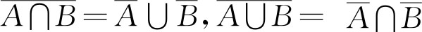
。DeMorgan定理可以推广到n个子集：设A1 、A2 、…An 为全集U的任意n个子集，则：
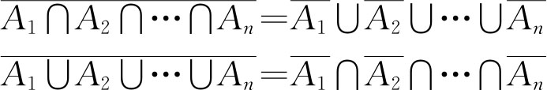
容斥原理：设S为有穷集，P1 、P2 、…Pn 是n条性质。S中的任一元素x对于这n条性质可能符合其中的1种、2种、…n种，也可能都不符合。设Ai 表示S中具有Pi 性质的元素构成的子集。有限集合A中的元素个数记为|A|。则：
（1）S中不具有性质P1 、P2 、…Pn 的元素个数有：
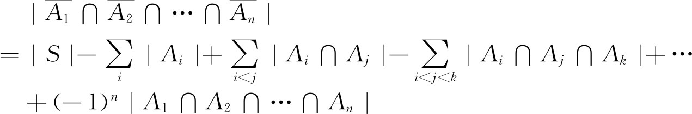
（2）S中具有性质P1 、P2 、…Pn 的元素个数为：
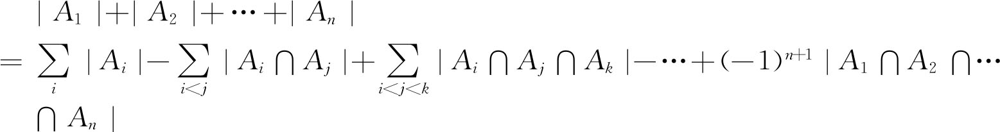
【例3.1-1】 在边长为2的等边三角形中放5个点，则至少存在两个点，它们之间的距离小于等于1。
【问题分析】
如图3.1-1所示，将等边三角形的3条边的中点连接起来，形成4个边长为1的等边三角形。根据抽屉原理，5个点放在4个三角形中，则至少有1个三角形内（包括其边上）有2个点，而一个边长为1的等边三角形内任两个点之间的距离都小于等于1。
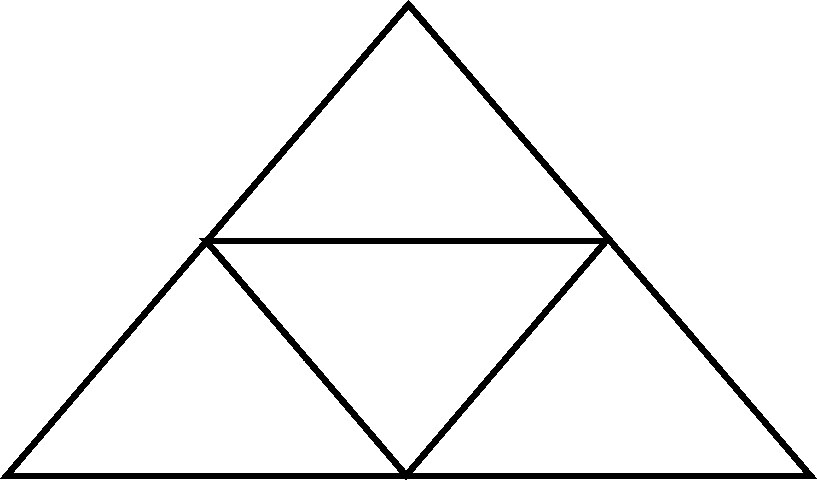
图3.1-1 抽屉原理举例
【例3.1-2】 有多少个没有重复数字且能够被5整除的四位奇数？
【问题分析】
被5整除的奇数个位只可能是5，只有这一种方案。千位不能是5和0，所以有8种方案。十位和百位只要不是5和千位上的数字就行。所以，根据乘法原理，共有1*8*8*7=448个符合条件的数。
【例3.1-3】 让8位同学站成一排，要求A、B两位同学互不相邻，有多少种排法？
【问题分析】
先不考虑“不相邻”的限制条件，共有8!种排法。再考虑7位同学的排法（取A不取B），则有7!种排法，再将B排在A的左边或右边，所以，A、B相邻的排法有2*7!种。所以，答案为8!-2*7!=30 240种排法。
【例3.1-4】 一个班级中有20人学习英语，有10人学习德语，有3人同时学习英语和德语，问班级中共有几人学习外语？
【问题分析】
用集合A、B分别表示学习英语和德语的学生，那么学习外语的学生就可以用集合|A∪B|表示，应用容斥原理，|A∪B|=|A|+|B|-|A∩B|=20+10-3=27人。
【例3.1-5】 一个班级有50名学生，进行了一次语数外考试，有9人语文得满分，12人数学得满分，14人英语得满分。又知道有6人语文、数学同时得满分，3人语文、英语同时得满分，8人英语、数学同时得满分，有2人三门课都得了满分。问：没有一门课得满分的有几人？至少一门课得满分的有几人？
【问题分析】
设S为班级所有学生的集合，A、B、C分别表示语文、数学、英语得满分的学生集合。由题意知：|S|=50，而且：
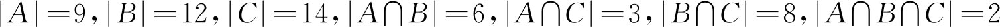
没有一门课得满分的学生集合为： ，至少一门课得满分的学生集合为：A∪B∪C，应用容斥原理：
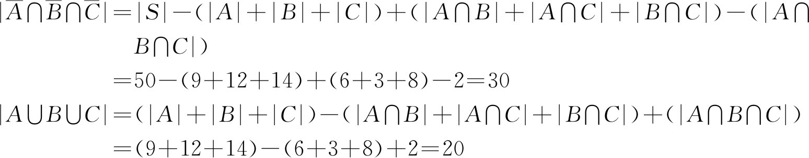
【例3.1-6】 在1到1000这1000个整数中，有多少个数不能被5、6、8中任意一个数整除？
【问题分析】
设S={1..1000}，A、B、C分别表示S中所有能够被5、6、8整除的数的集合，则：
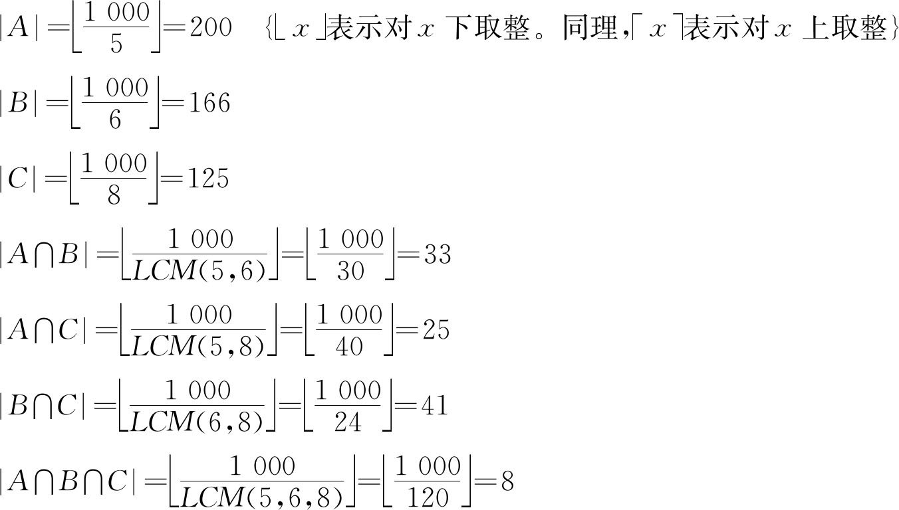
应用容斥原理：
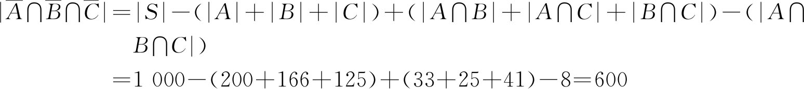
【例3.1-7】 取数问题（takenumber.*，64 MB，1秒）
【问题描述】
任意给出正整数n和k，0≤k<n≤1000000，例如n=16，k=4，然后按下列方法取数：
第一次取1，取数后的余数为16-1=15
第二次取2，取数后的余数为15-2=13
第三次取4，取数后的余数为13-4=9
第四次取8，取数后的余数为9-8=1
当第五次取数时，因为余数为1，不够取（要取16），此时作如下处理：余数1+k（4）=5，再从1开始取。
第五次取1，取数后的余数为5-1=4
第六次取2，取数后的余数为4-2=2
当第七次取数时，因为余数为2，不够取（要取4），此时作如下处理：余数2+k（4）=6，再从1开始取。
第七次取1，取数后的余数为6-1=5
第八次取2，取数后的余数为5-2=3
第九次要取4，但不够取，余数3+k（4）=7，继续取。
第九次取1，取数后的余数为7-1=6
第十次取2，取数后的余数为6-2=4
第十一次取4，取数后的余数为4-4=0，正好取完。
由此可见，当n=16，k=4时，按上面方法11次才能正好取完。
【输入格式】
输入一行两个整数，分别表示n和k。
【输出格式】
若能取完，输出“OK”及取数的次数（中间用一个空格隔开）；若永远不能取完，输出“ERROR”。
【输入样例】
54945 36904
【输出样例】
OK 442156
【问题分析】
首先想到直接模拟取数的过程，如果给出的n和k的值恰好能够按规则取完，那么模拟取数的过程很容易实现，只要一个循环语句即可实现。但是，当给出的n和k的值永远不能取完时，就不好处理了。所以，需要找出永远不能取完的条件。从取数规则看，可以把每次从1开始取数直到不够取时看作一个阶段，不妨称之为“一趟”取数。可以证明，如果出现当前一趟取数后的余数与前面某一趟取数后的余数相同，则取数永远不能取完。
要判断当前一趟取数后的余数与前面某一趟取数后的余数是否相同，一个自然的想法是将每趟取数后的余数放在一个线性表中。如果当前一趟取数后的余数已经在线性表中了，则表示这样的n和k是取不完的。
那么，问题是这个线性表要开多大？假设某一趟取数共取了m次，则把一趟取数中取的所有数加起来所对应的二进制数是（111…1）2 ，其中1的个数等于m，而余数一定不大于该数，否则的话就可以继续取下去。这说明一个数经过一趟取数后余下的数最多只能达到它的一半，如从14中取走1，2，4后余下7，此时不够取8。对任意给定的n和k，根据以上分析可以知道，第一趟取数后的余数不超过n/2，加上k后不超过k+n/2，继续进行第二趟取数，取完后的余数不超过k/2+n/4，加上k后不超过3k/2+n/4，如此一直进行下去，假如给定的n和k的情况是取不完的，则不难证明第i趟取数后余下的数不超过k-k/q+n/p，其中：p=2i ，q=2i-1 。当n和k都很大且取不完时，按以上分析，每趟取数所余下的数可能要到很多次以后才会出现重复，这就造成了很大的空间浪费。因此，必须对这个算法进行优化。
其实，由于每趟取数所余下的数不会超过k+n/2，根据抽屉原理，如果进行了k+n/2+1趟取数后尚未取完，则必有两趟取数所余下的数是相同的，可以判断这种情况下肯定是取不完的。
【参考程序】
#include <cstdio>
int b[31]，n，k;
int main（）{
b[0]=0;//计算连取i次数之总和
for （int i=1，j=1; i <=30; i++，j *=2）
b[i]=b[i-1]+j;
scanf（"%d%d"，&n，&k）;
int total=0，rest=n;//total表示取数的次数，rest表示剩下的数
for （int sum=0; sum< k+n / 2; sum++，rest+=k）{ //sum表示取数的趟数
for （int i=1; i <=30; i++） //计算本趟取数之总和
if （b[i] > rest）{
rest-=b[i-1];
total+=i-1;
break;
}
if （!rest） break;
}
if （rest） printf（"ERROR＼n"）;
else printf（"OK %d＼n"，total）;
return 0;
}
【例3.1-8】 盒子与球（box.*，64 MB，1秒）
【问题描述】
将n个不同颜色的球放入k个无标号的盒子中（n≥k，且盒子不允许为空）的方案数为S（n，k），例如S（4，3）=6。编程输入n和k，输出S（n，k）的值。
【问题分析】
本题可以分为两种情况讨论：一是第n个球单独放在一个盒子中，此时剩下的n-1个球有S（n-1，k-1）种方案；二是第n个球不单独放在一个盒子中，而是和其他若干球合在一起放在一个盒子中，此时我们先将前n-1个球放在k个盒子中，然后将第n个球插入到任意一个盒子中去，对于每一种将前n-1个球放在k个盒子中的方案，我们都有k种插法，因此有k*S（n-1，k）种方案。再根据加法原理，S（n，k）=S（n-1，k-1）+k*S（n-1，k），此递归式的边界为：S（i，1）=1，而当n<k时，S（n，k）=0。计算时采用递推的方法实现，如计算S（6，3）的过程如下：
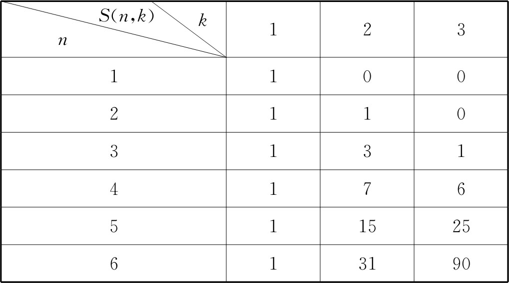
S（n，k）是一个很重要的函数。例如，对一个n个元素的集合S，要拆分成k个子集，也是S（n，k）。比如，集合{1，2，3，4}共有7个2部拆分，即S（4，2）=7，分别为：{1}和{2，3，4}，{2}和{1，3，4}，{3}和{1，2，4}，{4}和{1，2，3}，{1，2}和{3，4}，{1，3}和{2，4}，{1，4}和{2，3}。
【参考程序】
#include <vector>
#include <cstdio>
#define pb push_back
using namespace std;
vector<int> S[2][101];
vector<int> plus（vector<int> a，vector<int> b）{
vector<int> rst（max（a.size（），b.size（））+1）;
rst[0]=0;
for （int i=0; i+1 < rst.size（）; i++）{
if （i < a.size（）） rst[i]+=a[i];
if （i < b.size（）） rst[i]+=b[i];
rst[i+1]=rst[i] / 10;
rst[i] %=10;
}
if （!rst.back（）） rst.pop_back（）;
return rst;
}
vector<int> mult（vector<int> x，int t）{
vector<int> rst;
rst.pb（0）;
for （int i=0; i < x.size（）; i++）{
rst[i]+=x[i] * t;
rst.pb（rst[i] / 10）;
rst[i] %=10;
}
while （rst.back（））{
int tmp=rst.back（） / 10;
rst.back（） %=10;
rst.pb（tmp）;
}
rst.pop_back（）;
return rst;
}
void Print（vector<int> x）{
if （x.size（））
for （int i=x.size（）-1; i >=0; i--）
printf（"%d"，x[i]）;
else printf（"0"）;
printf（"＼n"）;
}
int main（）{
int n，k;
scanf（"%d%d"，&n，&k）;
for （int j=0; j <=k; j++） S[0][j].clear（）;
S[0][0].pb（1）;
for （int i=1; i <=n; i++）{
S[i & 1][0].clear（）;
for （int j=1; j <=k; j++）
S[i & 1][j]=plus（S[i-1 & 1][j-1]，mult（S[i-1 & 1][j]，j））;
}
Print（S[n & 1][k]）;
return 0；
}
【例3.1-9】 Round Numbers（POJ3252）
【问题描述】
输入两个十进制正整数a和b，求闭区间［a，b］内有多少个Round Number？
所谓的Round Number就是把一个十进制数转换为一个无符号二进制数，若该二进制数中0的个数大于等于1的个数，则它就是一个Round Number。
注意，转换所得的二进制数，最高位必然是1，最高位的前面不允许有0。
【输入格式】
输入一行两个数，表示a和b，1≤a<b≤2*109 。
【输出格式】
输出一行一个数，表示答案。
【输入样例】
2 12
【输出样例】
6
【问题分析】
要求闭区间［a，b］内有多少个Round Number，只需要分别求出闭区间［0，a］内有T个Round Number和闭区间［0，b+1］内有S个Round Number，再用S-T就是闭区间［a，b］内的Round Number数了。至于为什么是b+1，因为对于闭区间［0，k］，下面的算法求出的是比k小的Round Number数。
如何求［0，k］内的Round Number数？首先要把k转换为二进制数bin-k，并记录其位数（长度）len。那么，首先计算长度小于len的Round Number数有多少（由于这些数长度小于len，那么他们的值一定小于k，因此在进行组合时就无需考虑组合所得的数与k之间的大小了）。
for（i=1;i<bin[0]-1;i++） //bin[0]记录的是二进制数的长度len
for（j=i/2+1;j<=i;j++）
sum+=c[i][j];
之所以“i<len-1”，是因为这些长度比len小的数，最高位一定是1，那么剩下可供放入数字的位数就要再减少一个了。这段程序得到的sum为：
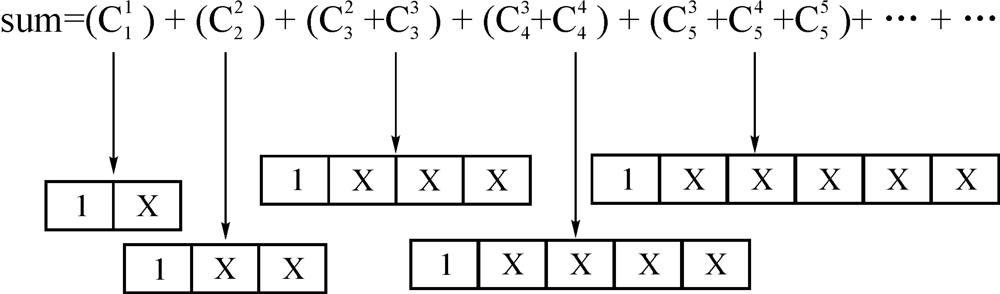
其中：
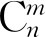
表示在允许放入数字的n个位上至少放入m个0才能够使其成为Round Number。1表示当前处理的二进制数的最高位，X表示该二进制数待放入数字的位。显然这段程序把二进制数0排除在外了，这对最终结果没有影响，因为最后要把区间［a，b］首尾相减，0存不存在都一样。然后计算长度等于len的Round Number数有多少（由于这些数长度等于len，他们的值可能小于k，也可能大于k，因此在进行组合时就要考虑组合所得的数与k之间的大小了）
int zero=0; //从高位向低位搜索过程中出现0的位的个数
for（i=bin[0]-1;i>=1;i--）
if（bin[i]）//当前位为1
for（j=（bin[0]+1）/2-（zero+1）;j<=i-1;j++）
sum+=c[i-1][j];
else
zero++;
之所以初始化“i=bin［0］-1”，是因为bin［］是逆向存放k的二进制的，因此要从高位向低位搜索，就要从bin［］后面开始。而要“bin［0］-1”，是因为默认以后组合的数长度为len，且最高位为1，因此最高位不再搜索了。
现在，问题的关键就是怎样使得以后组合的数小于k了。这个很简单：从高位到低位搜索过程中，遇到当前位为0，则不处理，但要用计数器zero累计当前0出现的次数。遇到当前位为1，则先把它看做为0，zero+1，那么此时当前位后面的所有低位任意组合都会比k小，找出这些组合中Round Number的个数，统计完毕后把当前位恢复为原来的1，然后zero-1，继续向低位搜索。
问题就只剩下：当当前位为1时，把它看做0之后，怎样去组合后面的数了？
要考虑2个方面：
1．当前位置i后面允许组合的低位有多少个，由于bin是从bin［1］开始存储二进制数的，因此，当前位置i后面允许组合的低位有i-1个。
2．组合前必须要除去前面已出现的0的个数zero，程序中初始化j=（bin［0］+1）/2-（zero+1），j本来初始化为（bin［0］+1）/2就可以了，表示对于长度为bin［0］的二进制数，当其长度为偶数时，至少其长度一半的位数为0，它才是Round Number，当其长度为奇数时，至少其长度一半+1的位数为0，它才是Round Number。但是现在还必须考虑前面出现了多少个0，根据前面出现的0的个数，j的至少取值会相应地减少。之所以“-（zero+1）”，是因为要把当前位bin［i］看做0。
最后剩下的一个问题，就是怎样得到每一个的值，可以利用组合数和杨辉三角形的关系
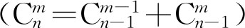
打表做。【参考程序】
#include<iostream>
using namespace std;
int c[33][33]={0};
int bin[35]; //十进制n的二进制数
void play_table（void）{ //打表计算C（n，m）
for（int i=0;i<=32;i++）
for（int j=0;j<=i;j++）
if（!j ｜｜ i==j）
c[i][j]=1;
else
c[i][j]=c[i-1][j-1]+c[i-1][j]; //c[0][0]=0;
return;
}
void dec_to_bin（int n）{//十进制n转换二进制，逆序存放到bin[]
bin[0]=0; //b[0]是二进制数的长度
while（n）{
bin[++bin[0]]=n%2;
n/=2;
}
return;
}
假如你是一个媒人，有若干个单身男子登门求助，还有同样多的单身女子也前来征婚。如果你已经知道这些女孩儿在每个男孩儿心目中的排名，以及男孩儿们在每个女孩儿心中的排名，你应该怎样为他们牵线配对呢？
最好的配对方案当然是，每个人的另一半正好都是自己的“第一选择”。这虽然很完美，但绝大多数情况下都不可能实现。比方说，男1号最喜欢的是女1号，而女1号的最爱不是男1号，这两个人的最佳选择就不可能被同时满足。如果好几个男孩儿最喜欢的都是同一个女孩儿，这几个男孩儿的首选也不会同时得到满足。当这种最为理想的配对方案无法实现时，怎样的配对方案才能令人满意呢？
其实，找的对象太完美不见得是好事儿，和谐才是婚姻的关键。如果男1号和女1号各有各的对象，但男1号觉得，比起自己现在的，女1号更好一些；女1号也发现，在自己心目中，男1号的排名比现男友更靠前。这样一来，这两人就可能抛弃各自现在的对象——如果出现了这种情况，我们就说婚姻搭配是不稳定的。作为一个红娘，你深知，对象介绍得不好没关系，就怕婚姻关系不稳定。牵线配对时，虽然不能让每个人都得到最满意的，但搭配必须得稳定。换句话说，对于每一个人，在他心目中比他当前伴侣更好的异性，都不会认为他也是一个更好的选择。现在的问题是：稳定的婚姻搭配总是存在吗？应该怎样寻找？
为了便于分析，我们做一些约定，用字母A、B、C对男性进行编号，用数字1、2、3对女性进行编号。我们把所有男性从上到下列在左侧，括号里的数字表示每个人心目中对所有女性的排名；再把所有女性列在右侧，用括号里的字母表示她们对男性的偏好。图3.2-1所示的就是2男2女的一种情形，每个男的都更喜欢女1号，但女1号更喜欢男B，女2号更喜欢男A。若按A—1、B—2进行搭配，则男B和女1都更喜欢对方一些，这样的婚姻搭配就是不稳定的。但若换一种搭配方案（如图3.2-2），这样的搭配就是稳定的了。
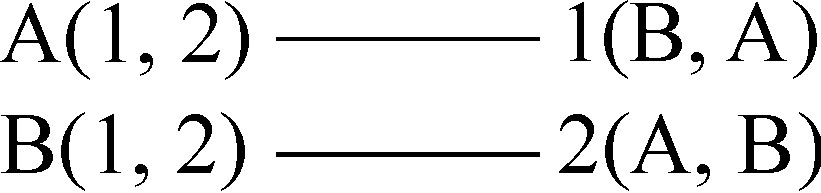
图3.2-1 一个不稳定的婚姻搭配图
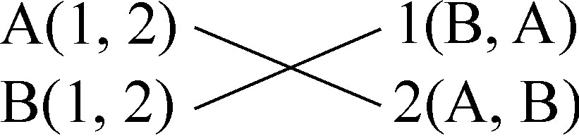
图3.2-2 一个稳定的婚姻搭配
可能很多人会立即想到一种寻找稳定婚姻搭配的策略：不断修补当前搭配方案。如果两个人互相都觉得对方比自己当前的伴侣更好，就让这两个人成为一对，剩下被甩的那两个人组成一对。
如果还有想要私奔的男女对，就继续按照他们的愿望互换情侣，直到最终消除所有的不稳定组合。容易看出，应用这种“修补策略”所得到的最终结果一定满足稳定性，但这种策略的问题在于，它不一定存在“最终结果”。事实上，按照上述方法反复调整搭配方案，最终可能会陷入一个死循环，因此该策略甚至不能保证得出一个确定的方案来，如图3.2-3所示。
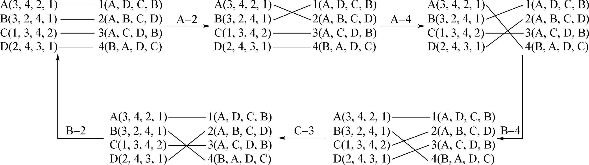
图3.2-3 应用“修补策略”可能会产生死循环
1962年，美国数学家David Gale和Lloyd Shapley发明了一种寻找稳定婚姻的策略。不管男女各有多少人，也不管他们的偏好如何，应用这种策略后总能得到一个稳定的搭配。换句话说，他们证明了稳定的婚姻搭配总是存在的。有趣的是，这种策略反映了现实生活中的很多真实情况。
在这种策略中，男孩儿将一轮一轮地去追求他中意的女子，女子可以选择接受或者拒绝他的追求者。第一轮，每个男孩儿都选择自己名单上排在首位的女孩儿，并向她表白。此时，一个女孩儿可能面对的情况有三种：没有人跟她表白，只有一个人跟她表白，有不止一个人跟她表白。在第一种情况下，这个女孩儿什么都不用做，只需要继续等待；在第二种情况下，接受那个人的表白，答应暂时和他做情侣；在第三种情况下，从所有追求者中选择自己最中意的那一位，答应和他暂时做情侣，并拒绝所有其他追求者。
第一轮结束后，有些男孩儿已经有女朋友了，有些男孩儿仍然是单身。在第二轮追女行动中，每个单身男孩儿都从所有还没拒绝过他的女孩儿中选出自己最中意的那一个，并向她表白，不管她现在是否是单身。和第一轮一样，女孩儿们需要从表白者中选择最中意的一位，拒绝其他追求者。注意，如果这个女孩儿已经有男朋友了，当她遇到了更好的追求者时，她必须拒绝掉现在的男友，投向新的追求者的怀抱。这样，一些单身男孩儿将会得到女友，那些已经有了女友的人也可能重新变成光棍。在以后的每一轮中，单身男孩儿继续追求列表中的下一个女孩儿，女孩儿则从包括现男友在内的所有追求者中选择最好的一个，并对其他人说不。这样一轮一轮地进行下去，直到某个时候所有人都不再单身，下一轮将不会有任何新的表白发生，整个过程自动结束。此时的婚姻搭配就一定是稳定的了。
这个策略会不会像之前的修补法一样，出现永远也无法终止的情况呢？不会。下面我们将说明，随着轮数的增加，总有一个时候所有人都能配对。由于在每一轮中，至少会有一个男孩儿向某个女孩儿告白，因此总的告白次数将随着轮数的增加而增加。倘若整个流程一直没有因所有人都配上对了而结束，最终必然会出现某个男孩儿追遍了所有女孩儿的情况。而一个女孩儿只要被人追过一次，以后就不可能再单身了。既然所有女孩儿都被这个男孩儿追过，就说明所有女孩儿现在都不是单身，也就是说此时所有人都已配对。
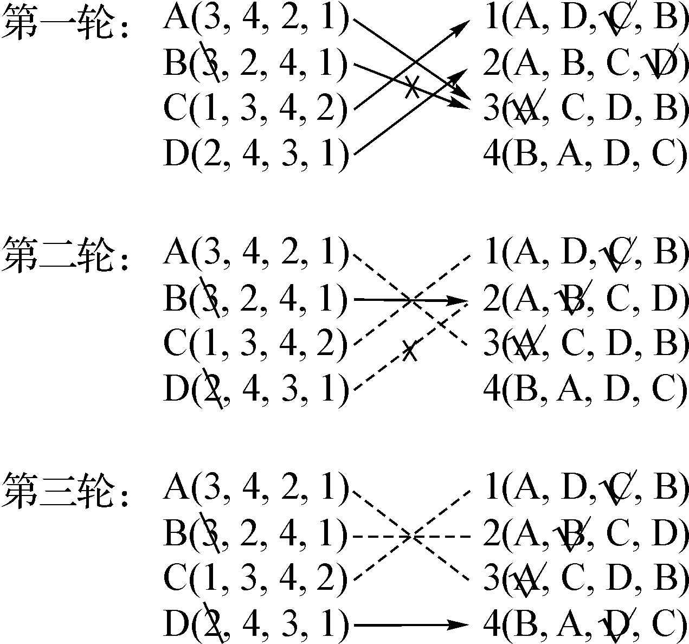
图3.2-4 应用上述策略，三轮之后将得出稳定的婚姻搭配
接下来，我们还需要证明，这样得出的配对方案确实是稳定的。首先注意到，随着轮数的增加，一个男孩儿追求的对象总是越来越糟，而一个女孩儿的男友只可能变得越来越好。假设男A和女1各自有各自的对象，但比起现在的对象，男A更喜欢女1。因此，男A之前肯定已经跟女1表白过。既然女1最后没有跟男A在一起，说明女1拒绝了男A，也就是说她有了比男A更好的男孩儿。这就证明了，两个人虽然不是一对但都觉得对方比自己现在的伴侣好，这样的情况绝不可能发生。
上面这个用来寻找稳定婚姻的策略就叫做“Gale-Shapley算法”，也叫“延迟认可算法”。Gale-Shapley算法最大的意义就在于，作为一个为这些男女牵线的媒人，你并不需要亲自计算稳定婚姻匹配，甚至根本不需要了解每个人的偏好，只需要按照这个算法组织一个男女配对活动就可以了。你需要做的仅仅是把算法流程当作游戏规则告诉大家，游戏结束后会自动得到一个大家都满意的婚姻匹配。整个算法可以简单地描述为：每个人都去做自己想做的事情。对于男性来说，从最喜欢的女孩儿开始追起是顺理成章的事；对于女性来说，不断选择最好的男孩儿也正好符合她的利益。因此，大家会自动遵守游戏规则，不用担心有人虚报自己的偏好。
历史上，这样的“配对游戏”还真有过实际应用，并且更有意思的是，这个算法的应用居然比算法本身的提出还早10年。早在1952年，美国就开始用这种办法给医学院的学生安排工作，这被称之为“全国住院医师配对项目”。配对的基本流程就是，各医院从尚未拒绝这一职位的医学院学生中选出最佳人选并发送聘用通知，当学生收到来自各医院的聘用通知后，系统会根据他所填写的意愿表自动将其分配到意愿最高的职位，并拒绝掉其他的职位。如此反复，直到每个学生都分配到了工作。那时人们并不知道这样的流程可以保证工作分配的稳定性，只是凭直觉认为这是很合理的。直到10年之后，Gale和Shapley才系统地研究了这个流程，提出了稳定婚姻问题，并证明了这个算法的正确性。
这个算法还有很多有趣的性质。比如说，大家可能会想，这种男追女女拒男的方案对男性更有利还是对女性更有利呢？答案是，这种方案对男性更有利。事实上，稳定婚姻搭配往往不止一种，然而上述算法的结果可以保证，每一位男性得到的伴侣都是所有可能的稳定婚姻搭配方案中最理想的，同时每一位女性得到的伴侣都是所有可能的稳定婚姻搭配方案中最差的。
这个算法会有一些潜在的问题。刚才我们已经说了，对于每位女性来说，得到的结果都是所有可能的稳定搭配中最差的一种。此时，倘若有某位女性知道所有其他人的偏好列表，经过精心计算，她有可能发现，故意拒绝掉本不该拒绝的人（暂时保留一个较差的人在身边），或许有机会等来更好的结果。因而，在实际生活中应用这种算法，不得不考虑一些可能的欺诈与博弈。
这个算法还有一些局限。例如，它无法处理2n个人不分男女的稳定搭配问题。一个简单的应用场景便是宿舍分配问题：假设每个宿舍住两个人，已知2n个学生中每一个学生对其余2n-1个学生的偏好评价，如何寻找一个稳定的宿舍分配？此时，Gale-Shapley算法就不再有用武之地了。而事实上，宿舍分配问题中很可能根本就不存在稳定的搭配。例如，有A、B、C、D四个人，其中A把B排在第一，B把C排在第一，C把A排在第一，而且他们三人都把D排在最后。容易看出，此时一定不存在稳定的宿舍分配方案。倘若A、D同宿舍，B、C同宿舍，那么C会认为A是更好的室友（因为C把A排在了第一），同时A会认为C是更好的室友（因为他把D排在了最后）。同理，B、D同宿舍或者C、D同宿舍也都是不行的，因而稳定的宿舍分配是不存在的。此时，重新定义宿舍分配的优劣性便是一个更为基本的问题。
稳定婚姻问题还有很多其他的变种，有些问题甚至是NP完全问题，至今仍然没有（也不大可能有）一种有效的算法。在图论、算法和博弈论中，这都是非常有趣的话题。
【例3.2-1】 The Stable Marriage Problem（POJ3487）
【问题描述】
稳定婚姻系统问题如下：
1．集合M表示n个男性；
2．集合F表示n个女性；
3．对于每个人我们都按异性的中意程度给出一份名单（从最中意的到最不中意的）。
如果没有（m，f），f∈F，m∈M，f对m比对她的配偶中意的同时m对f比对他的配偶更加中意，那这个婚姻是“稳定”的。如果一个稳定配对不存在另一个稳定婚姻配对，其中所有的男性的配偶都比现在强，那么这个稳定配对称为男性最优配对。
【输入格式】
第一行为一个数，表示测试数据的组数。
对于每组数据，第一行为n（0<n<27）。接下来一行依次为男性的名字（小写字母）和女性的名字（大写字母），接下来n行为每个男性的中意程度名单（从大到小），接下来n行是女性的中意程度名单（同上）。
【输出格式】
对于每组测试数据输出一组男性最优配对，男性按字典序从小到大排列，每行为“男姓名 女姓名”的形式，每组数据之间输出一空行。
【输入样例】
2
3
a b c A B C
a:BAC
b:BAC
c:ACB
A:acb
B:bac
C:cab
3
a b c A B C
a:ABC
b:ABC
c:BCA
A:bac
B:acb
C:abc
【输出样例】
a A
b B
c C
a B
b A
c C
【问题分析】
直接应用Gale-Shapley算法求解。
【参考程序】
#include<iostream>
#include<cstring>
#include<queue>
#include<cstdio>
#include<cmath>
#include<algorithm>
#define N 30
#define inf 1<<29
#define MOD 2007
#define LL long long
using namespace std;
int couple; //总共多少对
int malelike[N][N]，femalelike[N][N]; //男士对女士的喜欢程度，按降序排列，女士对男士的喜欢程度一一对应
int malechoice[N]，femalechoice[N]; //男士的选择，女士的选择
int malename[N]，femalename[N]; //name的HASH
char str[N];
queue<int>freemale; //没有配对的男士
int main（）{
int t;
scanf（"%d"，&t）;
while（t--）{
scanf（"%d"，&couple）;
//清空队列
while（!freemale.empty（））
freemale.pop（）;
//将男士的名字存下，初始都没有配对
for（int i=0;i<couple;i++）{
scanf（"%s"，str）;
malename[i]=str[0]-'a';
freemale.push（malename[i]）;
}
//将名字排序，便于字典序
sort（malename，malename+couple）;
for（int i=0;i<couple;i++）{
scanf（"%s"，str）;
femalename[i]=str[0]-'A';
}
//男士对女士的印象，按降序排列
for（int i=0;i<couple;i++）{
scanf（"%s"，str）;
for（int j=0;j<couple;j++）
malelike[i][j]=str[j+2]-'A';
}
//女士对男士的打分，添加虚拟人物，编号couple，为女士的初始对象，
for（int i=0;i<couple;i++）{
scanf（"%s"，str）;
for（int j=0;j<couple;j++）
femalelike[i][str[j+2]-'a']=couple-j;
femalelike[i][couple]=0;
}
//一开始男士的期望都是最喜欢的女士
memset（malechoice，0，sizeof（malechoice））;
//女士先初始一个对象
for（int i=0;i<couple;i++）
femalechoice[i]=couple;
while（!freemale.empty（））{
//找出一个未配对的男士，注意不要习惯性的POP
int male=freemale.front（）;
//男士心仪的女士
int female=malelike[male][malechoice[male]];
//如果当前男士比原来的男友更好
if（femalelike[female][male]>femalelike[female][femalechoice[female]]）{
//成功脱光
freemale.pop（）;
//如果有前男友，则打回光棍，并且考虑下一个对象
//不要把虚拟的人物加入队列，否则就死循环或者错误
if（femalechoice[female]!=couple）{
freemale.push（femalechoice[female]）;
malechoice[femalechoice[female]]++;
}
//当前男友为这位男士
femalechoice[female]=male;
}
else
//如果被女士拒绝，则要考虑下一个对象
malechoice[male]++;
}
for（int i=0;i<couple;i++）
printf（"%c %c＼n"，malename[i]+'a'，
malelike[malename[i]][malechoice[malename[i]]]+'A'）;
if（t） puts（""）;
}
return 0;
}
组合数学研究的中心问题是如何按照一定的规则来安排一些物体。具体可以分为以下四种问题：
1．存在性问题：判断满足某种条件的情况或状态是否存在；
2．计数性问题：存在多少种满足某种条件的情况或状态；
3．构造性问题：如果已判断出满足某种条件的状态是存在的，那么如何构造出来；
4．最优化问题：找出某种评价标准下的最佳（或较佳）构造方案。
【例3.3-1】 骑士巡游
【问题描述】
有一个n*n（n≤100）的棋盘，如图3.3-1（左图）所示为一个n=5的棋盘。在棋盘的任意一位置上有一匹中国象棋中的马（图中马的位置为x=2，y=4），马可以在棋盘范围内往8个方向跳“日”字。编程输入n和马的初始位置（x，y），判断马能否不重复地走遍棋盘上的每一个点。
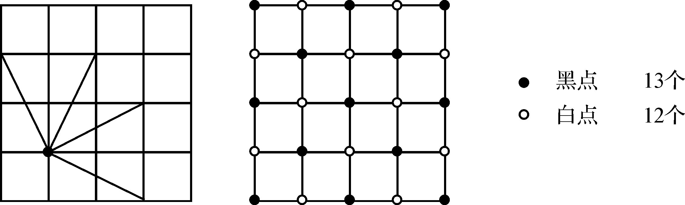
图3.3-1 棋盘及马的跳法
【问题分析】
本题可以采用“搜索”算法做，但时间复杂度很差。注意到本题只要判断是否有解，并不需要构造出解，所以搜索出一个解是没有必要的。我们介绍一种“着色法”，将棋盘上的点，间隔着涂成黑白点，若马在黑点出发，跳一步，则下一点必为白点，反之亦然。如图3.3-1（右图）所示，当n=5，共25个点，将左上角着成黑色，所以，黑、白点个数分别是13和12个，则“黑—白—黑—…—黑”是可能的，而“白—黑—白—…—白”一定是不可能的，即从白点出发，问题一定无解。所以，可以初步判断：若n是奇数、且出发点的坐标x，y之和也是奇数，则问题一定无解。其他情况下的判断请读者思考。
【例3.3-2】 路径问题
【问题描述】
有一个m*n的棋盘，如图3.3-2（左图）所示为一个3*4的棋盘，有一个中国象棋中的“卒”要从左上角走到右下角，卒每步只能往右或往下走一格，问一共有多少种走法？
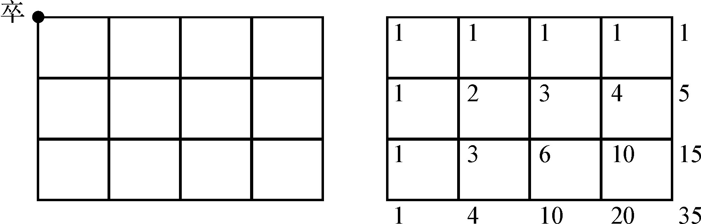
图3.3-2 棋盘上的卒
【问题分析】
卒是如何走到（3，4）的呢？只能从（3，3）或（2，4）移动一格。因此，很容易想到类似杨辉三角形的解法，假设f（m，n）表示要求的答案，则应用加法原理得到：f（m，n）=f（m-1，n）+f（m，n-1），其中：m>0且n>0。当m=0或n=0时，f（m，n）=1。本质上来说，不管卒怎么走，它最终都是往下走了m次，往右走了n次，至于怎么组合而成的，是先往下再往右，还是先往右再往下，都是可以的。具体计算可以采用“逐行递推”的方法实现，如图3.3-2（右图）所示。
换一种解法，假设用0代表向右走一步，用1代表向下走一步，那么从左上角到右下角的一种可能的走法，就唯一地对应了一个由4个0和3个1组成的7位01字符串。反之，给定一个由4个0和3个1组成的7位01字符串，则这个字符串又唯一地对应着一种可能的走法。这样便建立了一种一一对应关系，所求的方案数就是由4个0和3个1组成的7位“01字符串”的个数，即C（7，4）=35。一般公式为：f（m，n）=C（m+n，n）。
【例3.3-3】 纵横图问题
【问题描述】
将1，2，3，…n2 共n2 个自然数排成n行n列的正方形（数字方阵），使得每行、每列及两条对角线上的n个数之和都相等，问有没有这种可能？如果有是否唯一？你能构造出一个吗？
【问题分析】
当n为奇数时，一般称之为“n阶奇数幻方”，下面我们也只讨论n为奇数的情况。首先，n阶奇数幻方是存在的，如图3.3-3就是一个5阶奇数幻方，可以验证它满足题目的要求，而且不唯一，因为把这个数字方阵对称、旋转后可得到若干个依然满足题目的方阵。
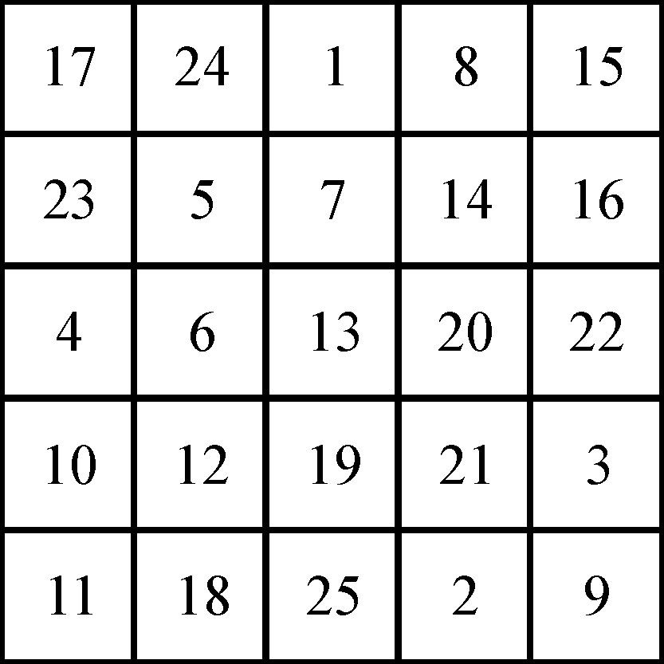
图3.3-3 5阶奇数幻方
构造n阶奇数幻方的方法一般如下：把1放在第1行的正中间，对于后面的任意1个数i（i从2到n2 ），如果它的前一个数是n的倍数，则i的位置应该在前一个数的正下方；否则，i的位置应该在前一个数的右上方。当然，如果过程中出现i的位置超出了棋盘，则应该把它拉回来（即出现在第1行的上面则变成第n行，出现在第n列的右边则变成第1列）。
【例3.3-4】 运费问题
【问题描述】
产地A1 ，A2 ，…Am 生产某种产品的产量分别为a1 ，a2 ，…am ，销地B1 ，B2 ，…Bn 对该种产品的需求量分别为b1 ，b2 ，…bn ，假设从产地Ai 到销地Bj 的单位运费为Cij ，产和销是平衡的，即：
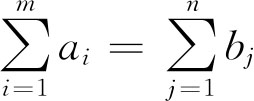
问：怎样合理安排该种产品的运输方案，能使其总运费Z最少呢？
【问题分析】
本题，我们暂且只考虑问题模型的建立。设从Ai 到Bj 的运量为Xij ，则该问题相当于求解如下方程：
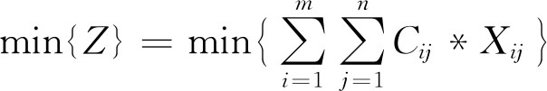
，并满足下面两个约束条件：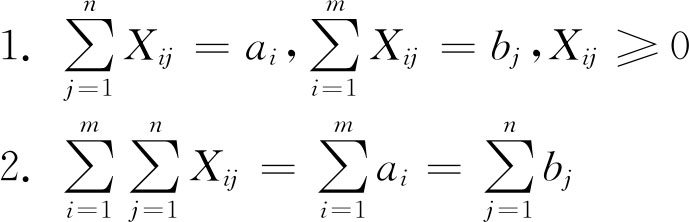
组合数学的研究对象中，根据有无顺序，一般分为排列问题和组合问题。排列与组合的根本区别在于前者与元素的顺序有关，后者与元素的顺序无关。
在排列与组合的问题中，经常会出现计数问题，解决计数问题的思路一般有以下三种：
1．只取要的。即把各种符合条件的情形枚举出来，再利用加法原理求和；
2．先全部取，再减去不要的。即把所有可能的情形枚举出来，再减去不符合条件的情形；
3．先取后排。即先把各步中符合条件的排列或组合计算出来，再根据乘法原理求积。
从n个元素的集合S中，有序选取出r个元素，r≤n，叫作S的一个r排列。不同的排列总数记作P（n，r）或
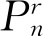
。如果两个排列满足下列条件之一，它们就被认为是不同的排列：所含元素不全相同；所含元素相同但顺序不同。
从n个不同元素中取出r个元素，按照一定顺序排成一列，当r<n时，叫做从n个不同元素取出r个不同元素的一种选排列；当r=n时，叫做n个不同元素的全排列。
应用乘法原理，可以推导出选排列P（n，r）的方案数：
P（n，r）=n*（n-1）*（n-2）*…（n-r+1）=n!/（n-r）!
读作“n的降r阶乘”，特别地，P（n，n）=n!。
从n个不同元素中可以重复地选取出m个元素的排列，叫做相异元素可重复排列。其排列方案数为nm 种。
例如，从1、2、3、4、5五个数字中任取三个出来组成一个三位数，有P（5，3）=60种方案，即一般的排列（每位都不许相同）。如果每个数字都可以重复使用（即可以出现111这种三位数），则有53 =125种。
如果在n个元素中，有n1 个元素彼此相同，有n2 个元素彼此相同，……又有nm 个元素彼此相同，并且n1 +n2 +…nm =n，则这n个元素的全排列叫做不全相异元素的全排列。其排列数计算公式为：n!/（n1 !*n2 !*…nm !）。
如果n1 +n2 +…nm =r，则从这n个元素中选出r个（r<n）的选排列叫不全相异元素的选排列，其排列数计算公式为：P（n，r）/（n1 !*n2 !*…nm !）。
【例3.4-1】 将1、2、3、4、5五个数进行排列，要求4一定要排在2的前面。问：有多少种排法？
【问题分析】
方法1：因为1、3、5的排列先后无任何要求，所以可以先把1、3、5做全排列，有3!种。假设1、3、5构成的一种排法为abc，然后我们把2、4往其中插，比如先插4，再插2，则4有4种插法（4abc，a4bc，ab4c，abc4），对于每一种插法，2又分别有4，3，2，1种插法，根据加法原理，2、4有4+3+2+1=10种插法，再根据乘法原理，最后的解为3!*10=60种。
方法2：先不考虑2、4的要求，即求5个数的全排列，共有5!种。2和4的位置先后分布情况各半，所以解为5!/2=60种。
【例3.4-2】 有3个相同的黄球、2个相同的蓝球、4个相同的白球排成一排，问：有多少种不同的排法？
【问题分析】
根据不全相异元素的全排列公式，解为：（3+2+4）!/（3!*2!*4!）=1 260种。
【例3.4-3】 把两个红球、一个蓝球、一个白球放到10个编号不同的盒子中去，每个盒子最多放1个球，有多少种放法？
【问题分析】
根据不全相异元素的选排列公式，解为：P（10，4）/（2!*1!*1!）=2 520种。
【例3.4-4】 选排列的生成
【问题描述】
输入两个整数n和r，输出P（n，r）的所有方案。
【输入样例】
3 2
【输出样例】
1 2
1 3
2 1
2 3
3 1
3 2
【问题描述】
采用回溯法实现。设递归过程done（i），i表示当前已经生成了排列中第i个位置上的数。首先判断i与r的值是否相等，若相等，表示已经生成了一个排列，则输出并回溯继续找下一种排列；否则（i<r）继续递归下去。之后再穷举当前位置上可能填写的数j（1≤j≤n），若j没有在该排列的前面出现过，则该位置上就选择j；若已经出现过，则j的值增加1，当j=n时回溯。
【参考程序】
#include <cstdio>
#include <cstring>
int n，r，data[20];
bool app[20];
void Print（）{
for （int i=0; i < r-1; i++） printf（"%d "，data[i]+1）;
printf（"%d＼n"，data[r-1]+1）;
}
void done（int i）{
if （i==r）{
Print（）;
return;
}
for （int j=0; j < n; j++）
if （!app[j]）{
app[j]=true;
data[i]=j;
done（i+1）;
app[j]=false;
}
}
int main（）{
memset（app，false，sizeof （app））;
scanf（"%d%d"，&n，&r）;
done（0）;
return 0;
}
设（a1 ，a2 ，…an ）是{1，2，…n}的一个全排列，若对于任意的i∈{1，2，…n}，都有ai ≠i，则称（a1 ，a2 ，…an ）是{1，2，…n}的一个错位排列。一般用Dn 表示{1，2，…n}的错位排列的个数。
Dn =n!*（1-1/1!+1/2!-1/3!+1/4!-…（-1）n /n!）
证明：
设S是由{1，2，…n}构成的所有全排列组成的集合，则|S|=n!。
设Ai 是在{1，2，…n}的所有排列中由第i个位置上的元素恰好是i的所有排列组成的集合，则有：|Ai |=（n-1）!。
同理可得：|Ai ∩Aj |=（n-2）!。
…
一般情况下，有：|Ai1 ∩Ai2 ∩…∩Aik |=（n-k）!。
因为Dn 是S中不满足性质P1 ，P2 ，…Pn 的元素的个数，所以由容斥原理得：
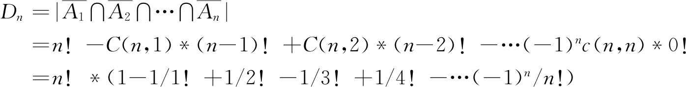
【例3.4-5】 书架上有6本书，编号分别为1～6，取出来再放回去，要求每本书都不在原来的位置上。问：有多少种排法？
【问题分析】
先尝试从小数据着手，找找规律：
f（1）=0
f（2）=1
f（3）=2=2*（0+1）
f（4）=9=3*（1+2）
f（5）=44=4*（2+9）
…
归纳得到递归公式为：f（n）=（n-1）*（f（n-1）+f（n-2））
所以，f（6）=5*（9+44）=265。
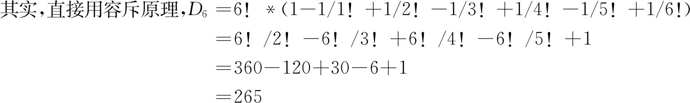
从n个不同元素中选取出r个元素，不分首尾地围成一个圆圈的排列叫做圆排列，其排列方案数为：P（n，r）/r。如果r=n，则有n!/n=（n-1）!种。
【例3.4-6】 有男女各5人，其中3对是夫妻，沿10个位置的圆桌就座，若每对夫妻都要坐在相邻的位置，问有多少种坐法？
【问题分析】
先让3对夫妻中的妻子和其他4人就坐，根据圆排列公式，共有7!/7=6!种坐法。然后每位丈夫都可以坐在自己妻子的左右两边，所以，共6!*2*2*2=5 760种坐法。
【例3.4-7】 全排列的生成
【问题描述】
编程输入N（N<20），输出1到N这N个自然数的全排列（一行十个）。
【输入样例】
5
【输出样例】
12345 12354 12435 12453 12534 12543 13245 13254 13425 13452
13524 13542 14235 14253 14325 14352 14523 14532 15234 15243
15324 15342 15423 15432 21345 21354 21435 21453 21534 21543
23145 23154 23415 23451 23514 23541 24135 24153 24315 24351
24513 24531 25134 25143 25314 25341 25413 25431 31245 31254
31425 31452 31524 31542 32145 32154 32415 32451 32514 32541
34125 34152 34215 34251 34512 34521 35124 35142 35214 35241
35412 35421 41235 41253 41325 41352 41523 41532 42135 42153
42315 42351 42513 42531 43125 43152 43215 43251 43512 43521
45123 45132 45213 45231 45312 45321 51234 51243 51324 51342
51423 51432 52134 52143 52314 52341 52413 52431 53124 53142
53214 53241 53412 53421 54123 54132 54213 54231 54312 54321
【问题分析】
可以直接采用选排列的生成方法（回溯法），只要令r=n即可。同时，我们再介绍另外一种算法——生成法。
为了输出N!种排列，我们可以试着寻找不同排列之间的规律。通过观察N=5的排列情况发现：如果把每个排列看作一个自然数，则所有排列对应的数是按从小到大的顺序排列的，从当前排列产生下一个排列时必然会造成某一位置上的数字变大，这一位置显然应该尽量靠右，并且在它左边位置上的数字保持不变，这就意味着这一位置变成的数字来自于它的右边，并且变大的幅度要尽可能小，也就是说在它右边如有几个数同时比它大时，应该用其中最小的来代替它。由于这一位置是满足上述条件的最右边的一位，所以在它右边的所有数字按逆序排列，即在这些数字的右边没有一个大于它的数。
程序实现时，先从右至左找到第一个位置，要求该位置上的数比它右边的数小，这个位置就是所要找的满足上述条件的位置。然后再从右到左找到第一个比该位置上的数字大的数字所在的位置。将这两个位置上的数字交换，再将该位置右边的所有元素颠倒过来，即将它们按从小到大的顺序排列，就得到了下一个排列。
已知排列A，生成下一个排列B的方法如下（设n=5，将A写成A=P1 P2 P3 P4 P5 ，假如A=13452）：
对于相邻的两项，若Pi <Pi+1 ，则称Pi ，Pi+1 为一个正序，Pi 为正序的首位，Pi+1 为末位。若Pi >Pi+1 ，则称Pi ，Pi+1 为一个逆序，Pi 为逆序的首位，Pi+1 为末位。
具体的算法描述如下：
1．确定要变动的第一位，记为i位：Pi ，它应为最后一个正序的首位。本例：i=3，Pi =4。
2．确定要与第i位交换的位，记为j位：Pj ，它应在第i位之后，所以应从第i+1位起，向后找到最后一个大于Pi 的数即可。本例：j=4，Pj =5。
3．交换Pi 与Pj ，生成一个新排列C=13 542。
4．将Pi+1 ，Pi+2 ，…Pn 从小到大排序，即由逆序转换成正序，便得到B=13 524。
【参考程序】
#include <algorithm>
#include <cstdio>
using namespace std;
int a[20];
int main（）{
int n;
scanf（"%d"，&n）;
for （int i=0; i < n; i++） a[i]=i;
int total=1;
for （int i=2; i <=n; i++）
total *=i; //计算全排列数n!
for （int k=0; k < total-1; k++） {
for （int i=0; i < n; i++） printf（"%d"，a[i]+1）;
printf（"＼n"）;
int L，R;
for （int i=n-1; i > 0; i--）
if （a[i-1] < a[i]） {
L=i-1;
break;
}
for （int i=n-1; i > 0; i--）
if （a[i] > a[L]） {
R=i;
break;
}
swap（a[L]，a[R]）;
for （int i=L+1; i < n-i+L; i++） swap（a[i]，a[n-i+L]）;
}
for （int i=0; i < n; i++） printf（"%d"，a[i]+1）;
printf（"＼n"）;
return 0；
}
从n个元素的集合S中，无序选取出r个元素，叫做S的一个r组合。所有不同组合的个数，叫做组合数，记做C（n，r）或 。如果两个组合中，至少有一个元素不同，它们就被认为是不同的组合。
因为每一种组合都可以扩展到r!种排列，而总排列为P（n，r），所以组合数C（n，r）=P（n，r）/r!=n!/（r!×（n-r）!），其中：r≤n，特别地，C（n，0）=1。
我们很容易推导出以下几个公式：
1． C（n，r）=C（n，n-r）
2． C（n，r）=C（n-1，r）+C（n-1，r-1）
3． C（n，0）+C（n，1）+…+C（n，n-1）+C（n，n）=2n
其中，第3个式子称为二项式定理。我们简单地证明以下：等式左边包含了n元集的从零个元素到n个元素的全部组合，每一种组合与一个n位二进制数一一对应。对应方式为：n位二进制数共有n位，每一位对应n元集的一个元素，如果n位二进制数某一位上为1，则表示选中该位对应的元素，否则表示未选中该位对应的元素，这样一个n位二进制数就对应一种组合；反过来每一种组合同样对应一个n位二进制数，而n位二进制数的总数为2n 。
从n个不同的元素中，取出r个元素组成一个组合，且允许这r个元素重复使用（一般r≤n），则称这样的组合为可重复组合，其组合数记为H（n，r），H（n，r）=C（n+r-1，r）。
证明：从n元集中可重复地选取r个元素，设第一个元素选了x1 个，第二个元素选了x2 个，…，第n个元素选了xn 个，则方程x1 +x2 +…xn =r的非负整数解的个数，就是n元集中的可重复r组合的总数。也可以理解为，将r个1排成一排，插入n-1个分隔符，把r个1分成n段，n段中的1的个数即是方程的一个解。插入n-1个分隔符的过程，实际上就是从n+r-1个位置中选择n-1个位置放分隔符，其余r个位置放1，共有C（n+r-1，n-1）=C（n+r-1，r）种。
【例3.5-1】 一班有10名同学，二班有8名同学。要在每个班级选出2名学生参加一个座谈会，问有多少种选法？
【问题分析】
运用组合数及乘法原理，共有：C（10，2）*C（8，2）=1 260种。
【例3.5-2】 某班有10名同学，其中有4名女同学。要在班级选出3名学生参加座谈会，其中至少有1名女同学，问有多少种选法？
【问题分析】
运用组合数及加法原理，共有：C（4，1）*C（6，2）+C（4，2）*C（6，1）+C（4，3）*C（6，0）=100种。也可以运用“减法原理”，即先确定1名女同学都不选的方案数为C（6，3）*C（4，0）=20种，而从10个人中选3个（不分性别）的方案数为C（10，3）=120种，所以，符合题目的方案数为120-20=100种。
【例3.5-3】 仅含有数字1和0的10位正整数中，能被11整除的数有多少个？
【问题分析】
一个正整数能被11整除的充要条件是其奇数位上数字之和与偶数位上数字之和的差是11的倍数。
设仅含有数字1和0的10位十进制正整数是n=1a8 a7 a6 a5 a4 a3 a2 a1 a0 （最高位必是1）。
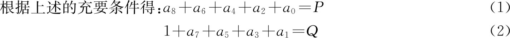
则P-Q能被11整除，且｜P-Q｜≤5。所以，P只能等于Q，设为K，则K可取1、2、3、4、5五种方案。对于给定的K，根据（1）式，a8 、a6 、a4 、a2 、a0 中应该为K个1，5-K个0，共有C（5，k）种方案。而a7 、a5 、a3 、a1 中应该为k-1个1，5-K个0，共有C（4，k-1）种方案。所以，根据乘法原、加法原理和排除法，总的方案数S为：C（5，1）*C（4，0）+C（5，2）*C（4，1）+C（5，3）*C（4，2）+C（5，4）*C（4，3）+C（5，5）*C（4，4）=126个。
【例3.5-4】 组合数的末十位（lastten.*，64 MB，1秒）
【问题描述】
输入n，r，输出C（n，r）的最后十位。其中:0<r≤n≤30000，输出时不足十位数也按十位输出，此时高位补0。
【问题描述】
29999 27381
【问题描述】
4531330240
【问题分析】
首先C（n，r）的值一定是自然数，因为连续r个自然数的积一定被r!整除，本题的关键是如何避免做除法，因为如果只做乘法或加法，只要保留最末十位有效数字即可。
避免除法的方法之一是约分，约分之后分母即会变成1，约分的具体方法是计算1～n之间的任意一个质数在C（n，r）中的重数。所谓质数p在自然数n中的重数是指自然数n的质因数分解式中质数p出现的次数，如72=2*2*2*3*3，则质数2在72中的重数为3，质数3在72中的重数为2。具体做法是对分子分母上的每个数分解质因子，用一个数组C记录重数。若分子上的数分解出了一个质因子p，则C［p］增加1，反之若分母上的数分解出了质因子p，则C［p］减少1，最后将每个质因子按其重数连乘即可。
方法之二是将计算公式化为C（n，r）=n!/（r!*（n-r）!），通过直接计算质数p在n!中的重数而得到数组c，质数p在n!中的重数为n div p+n div p2 +n div p3 +…，例如n=1000，p=3时，我们有：
1000 div 3+1000 div 9+1000 div 27+1000 div 81+1000 div 243+1000 div 729=333+111+37+12+4+1=498
所以1000!能被3498 所整除，但不能被3499 所整除。
为证明上述公式的正确性，我们可以考察n div pk ，它是代表整数{1，2，…n}中为pk 之倍数者的个数。因此，我们来研究n!中的整数，n!中的整数是指1～n之间的所有整数，则任何能被pj 但不能被pj+1 整除的整数，都被精确地算了j次，在n div p中算一次，在n div p2 中算一次，…在n div pj 中算一次。这就是n!中p作为因子出现的总次数。
另外，根据公式n div pk+1 =n div pk div p可以递推地求出p在n!中的重数。如上例有333 div 3=111，111 div 3=37，37 div 3=12，12 div 3=4，4div 3=1，类似于秦九韶算法。
程序实现时，先求出1～n之间的所有质数，再对每个质数求重数。质数p在C（n，r）中的重数等于质数p在n!中的重数-质数p在r!中的重数-质数p在（n-r）!中的重数。下面的程序段用于求质数p在n!的重数：
int u（int n，int p） {
int t=0，s=n / p;
while （s） {
t+=s;
s /=p;
}
return t;
}
方法之三是利用公式C（n，r）=C（n-1，r）+C（n-1，r-1），将计算C（n，r）的过程化为加法来做。该方法实质上就是求杨辉三角的第n行、第r列上的数，行列都从0开始。
【参考程序】
#include <vector>
#include <cstring>
#include <cstdio>
using namespace std;
const int maxn=30000;
bool temp[maxn+1];
vector<int> prime，fac; //fac表示各个因子出现的次数
int rst[10];//rst数组保存运算结果
void Add（int x，int t）{
for （int i=0; i < prime.size（） && prime[i] <=x; i++）
while （!（x % prime[i]））{
x /=prime[i];
fac[i]+=t;
}
}
int main（）{
memset（temp，true，sizeof （temp））;
prime.clear（）;
fac.clear（）;
for （int i=2; i <=maxn; i++）
if （temp[i]）{
prime.push_back（i）;
fac.push_back（0）;
for （int j=i * i; j <=maxn; j+=i） temp[j]=false;
}
int n，r;
scanf（"%d%d"，&n，&r）;
if （r > n-r） r=n-r;
for （int i=0; i < r; i++）{
Add（n-i，1）; //将n-r+1～n的因子加到fac中
Add（i+1，-1）; //将1～r的因子从fac中减去
}
memset（rst，0，sizeof （rst））; //将1～r的因子从a数组中减去
rst[0]=1;
for （int i=0; i < prime.size（）; i++）
for （int j=0; j < fac[i]; j++） {
for （int k=0; k < 10; k++） rst[k] *=prime[i];
for （int k=0; k < 10; k++） {
if （k < 9） rst[k+1]+=rst[k] / 10;
rst[k] %=10;
}
}
for （int i=9; i >=0; i--） printf（"%d"，rst[i]）;
printf（"＼n"）;
return 0;
}
【例3.5-5】 堆塔问题（tow.*，64 MB，1秒）
【问题描述】
设有n个边长为1的正立方体，在一个宽为1的轨道上堆塔，但塔本身不能分离。
例如，如图3.5-1所示：n=1时，只有1种方案（左图）；n=2时，有2种方案（中图）。
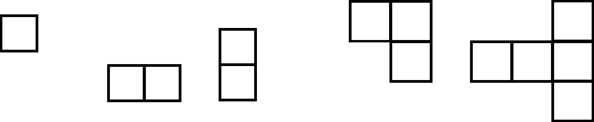
图3.5-1 n=1、2、3的情形
堆塔的规则为底层必须有支撑，右图的两种堆法是不合法的。
编程要求：输入n（n≤40），求两个问题：
1． 总共有多少种不同的方案？
2． 堆成k层（1≤k≤n）的方案数各是多少？
【问题分析】
问题1要求n个边长为1的正立方体总共有多少种不同的堆塔方案。首先考虑将n个边长为1的正立方体排成k（1≤k≤n）列的情况，每列的个数依次为x1 ，x2 ，…xk ，则x1 +x2 +…xk =n，这里按题目要求x1 ，x2 ，…xk 必须为正整数。设y1 =x1 -1，y2 =x2 -1，…yk =xk-1 ，则原方程可以转化为y1 +y2 +…yk =n-k。该方程的解的个数为：C（n-k+k-1，k-1）=C（n-1，k-1），所以，堆塔方案总数为C（n-1，0）+C（n-1，1）+…+C（n-1，n-1）=2n-1 。
关于问题2，可以这样考虑，将n个立方体的第一列去掉的话，则成为一个比n小的堆塔问题。这样问题2就可以用递推的方法来解。具体方法是从1到n依次求出堆成各层的方案数，设f（n，k）为堆成k层的方案数，则递推公式为：
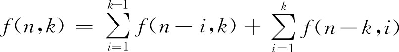
。【参考程序】
#include <iostream>
#include <cstring>
using namespace std;
long long f[41][41]，n;
int main（）{
cin>> n;
long long total=1;
for （int i=0; i < n-1; i++） total *=2;
cout<< "Total=" << total << endl;
memset（f，0，sizeof （f））;
f[0][0]=1;
for （int i=1; i <=n; i++）
for （int j=1; j <=i; j++）{
for （int k=1; k < j; k++） f[i][j]+=f[i-k][j];
for （int k=0; k <=j; k++） f[i][j]+=f[i-j][k];
}
for （int i=1; i <=n; i++）
cout<< "Height=" << i << " Kind=" << f[n][i] << endl;
return 0;
}
【例3.5-6】 多项式相乘（mult.*，64 MB，1秒）
【问题描述】
多项式相乘的展开是件相当烦琐的工作，DoubleRun快要烦死了。他把这个任务交给了你。为了简化，他只要你做一种多项式的展开，该种多项式的格式为：（x+a1 ）（x+a2 ）（x+a3 ）…（x+an-1 ）（x+an ），n的值事先给你。
当n=2时，展开式为:x2 +x（a1 +a2 ）+a1 a2 。
当n=3时，展开式为:x3 +x2 （a1 +a2 +a3 ）+x（a1 a2 +a1 a3 +a2 a3 ）+a1 a2 a3
每一个字符（包括“x”、“a”、“（”、“）”、“+”），每一个指数的每一个数字，每一个下标的每一个数字长度都为1。如n=3时，总长度为40。
【输入格式】
输入文件包含一个整数n（0<n≤109 ）。
【输出格式】
输出文件若展开式的总长度为t，则输出t mod 10000的值（t除10000取余）。
【输入样例】
3
【输出样例】
40
【问题分析】
先看几个例子，（x+a1 ）（x+a2 ）=x2 +x（a1 +a2 ）+a1 a2
（x+a1 ）（x+a2 ）（x+a3 ）=x3 +x2 （a1 +a2 +a3 ）+x（a1 a2 +a1 a3 +a2 a3 ）+a1 a2 a3
（x+a1 ）（x+a2 ）（x+a3 ）（x+a4 ）=x4 +x3 （a1 +a2 +a3 +a4 ）+x2 （a1 a2 +a1 a3 +a1 a4 +a2 a3 +a2 a4 +a3 a4 ）+x（a1 a2 a3 +a1 a2 a4 +a1 a3 a4 +a2 a3 a4 ）+a1 a2 a3 a4
观察得到：（x+a1 ）（x+a2 ）…（x+an ）=xn +xn-1 （共C（n，1）项，每项1个系数）+xn-2 （共C（n，2）项，每项2个系数）+…+x（共C（n，n-1）项，每项n-1个系数）+a1 a2 a3 …an 。
然而，当n大于10时，an 所占位数就不再是两位了。于是观察：C（5，3）的情况：
1 2 3
1 2 4
1 2 5
1 3 4
1 3 5
1 4 5
2 3 4
2 3 5
2 4 5
3 4 5
由此可见，C（m，n）中每个数字出现的次数为C（m，n）*n/m=C（m-1，n-1）。
于是，如果我们用S表示123456789101112…n的总位数，刚才的结论变成了：
xn +xn-1 （C（n，1）*1个字母+S+加号个数）+xn-2 （C（n，2）*2个字母+C（n-1，1）*S位数字+加号个数）+…+x（C（n，n-1）*（n-1）个字母+C（n-1，n-2）*S位数字+加号个数）+n个字母和S位数字。
化简一下，得到最终公式为：（s+2+n）*2n-1 +s+3*n-4。
【参考程序】
#include <cstdio>
const int base=10000;
int two（int x）{
if （!x） return 1;
int d=two（x / 2）;
d=d * d % base;
if （x & 1） return d * 2 % base;
return d;
}
int f（int x）{
int rst=0，i，L;
for （i=1，L=1; i <=x / 10; i *=10，L++）
rst=（rst+i % base * 9 * L） % base;
return （rst+（x-i+1） % base * L） % base;
}
int main（）{
int n;
scanf（"%d"，&n）;
printf（"%d＼n"，（n % base+2 * （n-1） % base+（f（n）+base-1） % base+two（n-1）*（（n+f（n）） % base） % base+two（n）+base-1） % base）;
return 0；
}
【例3.5-7】 球迷购票问题
【问题描述】
盛况空前的足球赛即将举行。球迷在售票处排起了长龙。按售票处规定，每位购票者限购一张门票，且每张票售价为50元。在排成长龙的球迷中有n个人手持50元面值的钱币，另有n个人手持100元面值的钱币。假设售票处在开始售票时没有零钱，试问这2n个球迷有多少种排队方式可使售票处不会出现找不出钱的尴尬局面。
例如当n=2时，用A表示手持面值50元钱币的球迷，用B表示手持面值100元钱币的球迷，则最多可得到以下2组不同排队方式，使售票处不致出现找不出钱的尴尬局面。
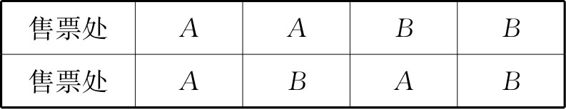
【编程任务】
对于给定的n（0≤n≤20），计算2n个球迷有多少种排队方式可使售票处不会致出现找不出钱的尴尬局面。
【输入格式】
输入一行一个整数，表示n的值。
【输出格式】
输出一行一个整数，表示方案数。
【输入样例】
2
【输出样例】
2
【问题分析】
算法1：回溯法
设变量k表示售票处有50元面值的钞票张数，初始时令k=0，若来人手拿100元的钞票且k=0，则回溯，否则继续递归。以下程序中的过程dfs（i）表示处理第i个人购票。若i=2n且购票成功，则计数器加1；若i<2n且购票成功，则继续递归。每个人要么手拿50元钞票（此时一定购票成功），要么手拿100元钞票（此时要看k的值是否等于0）。递归结束后，计数器中的值便为排队方案总数。
【参考程序】
#include <cstdio>
long long k，total，n;
void dfs（int dep）{
if （dep==2 * n）{
if （!k）total++;
return;
}
if （k）{
k--;
dfs（dep+1）;
k++;
}
k++;
dfs（dep+1）;
k--;
}
int main（）{
scanf（"%d"，&n）;
k=0;//售票处当前有的50元钞票的张数
total=0;//总的方案数
dfs（0）;
printf（"%d＼n"，total）;
return 0；
}
算法2：栈模型
算法1的实质是模拟，即建立了一棵解答树，共n层，除最后一层外的每一层的结点都向下拓展了两个子结点。时间复杂度是指数级的，所以超时得厉害。
通过算法1对问题的分析，我们发现：在任何时刻，若第n个人手拿100元的钞票购票，则在此之前，有m个人手拿50元钞票购票，则一定有m≥n-m，购票才能成功。同时，售票处收到的面值为50元的钞票最终必然全部找出，而面值为100元的钞票最终将全部留下，并且一旦收到一张面值为100元的钞票，则一定要找出一张面值为50元的钞票。由此，我们想到了用栈来表示这一过程：若某人手拿一张50元的钞票购票，则相当于一个元素进栈；若某人手拿一张100元的钞票购票，则相当于要一个元素出栈。所以问题就转化为（或者说等价于）：若1～n共n个元素依次进栈，问有多少种出栈顺序？
结论是：C（2n，n）/（n+1），即Catalan数，后面的算法中会再深入讲它的本质!
下面，我们讨论这个结论如果不知道，怎么办呢？
其实，我们可以把这个问题与1～n的全排列联系起来，1～n的全排列有n!种，其中有些就是我们问题的解，而有些不是!那么，有什么规律呢？结论是：若a1 ，a2 ，…an 是可能的依次出栈的序列，则一定不存在下面的情况：i<j<k，且aj <ak <ai 。证明如下：
若i<j<k，则说明ai 最先出栈，aj 次之，ak 最后出栈，我们根据ai 和aj 的大小关系，分两种情况讨论。
1．如果ai >aj ，那么当aj 出栈时，如果ak 已在栈中，则ak 比aj 先进栈，由输入序列知：ak <aj ，所以有ak <aj <ai ；而如果ak 还未进栈，则由输入序列知：ak 最大，所以有aj <ai <ak 。
2．如果ai <aj ，那么当aj 出栈时，如果ak 已在栈中，则ak 比aj 先进栈，由输入序列知：ak <aj ，而ai 与ak 的关系无法确定，所以有ak <ai <aj 或者ai <ak <aj ；而如果ak 还未进栈，则由输入序列知：ak 最大，所以有ai <aj <ak 。
综上所述，如果有i<j<k，则一定不会出现aj <ak <ai 这种情况，而其他情况都是可能的，由此我们得出基于栈和全排列的这个算法：
首先，产生1到n的共n个数的全排列，对于每种排列，若符合上面讲的5种出栈规则（即只要不符合那一条规则），那么便是一个可能的出栈序列，则计数器加1，当1到n的全排列枚举结束时，计数器的值便是问题的解。
具体实现时，可以采用前面讲到的全排列的回溯生成算法，若在每产生一个排列后进行该排列是否为可能的输出栈序列的判定，则与算法1相比，递归的深度降低，栈的使用空间减少，但在构造解答树的过程中，每层扩展的结点数则大大增加，而有些结点的增加是无意义的，所以我们在实际的实现中，可以一边生成排列一边进行可能输出序列的判断性检验，若不满足条件则及时剪枝。
【参考程序】
#include <cstdio>
#include <cstring>
long longdata［100］，total，n;
bool app［100］;
bool check（int s）{
for （int i=0; i < s-1; i++）
for （int j=i+1; j < s; j++）
if （data［j］ < data［s］ && data［s］ < data［i］）return false;
return true;
}
void dfs（int dep）{
if （dep==n）{
total++;
return;
}
for （int j=0; j < n; j++）
if （!app［j］）{
app［j］=true;
data［dep］=j;
if （check（dep））dfs（dep+1）;
app［j］=false;
}
}
int main（）{
scanf（"%d"，&n）;
total=0;
memset（app，false，sizeof （app））;
dfs（0）;
printf（"%d＼n"，total）;
return 0;
}
算法3：递归算法
如果不知道Catalan数C（2n，n）/（n+1）这个结论，算法2的效率还不如算法1。分析算法1和算法2的失败之处在于，算法实现时解答树中的结点数目巨多，结点是栈所存储的信息，大量结点的出现必然影响算法可运行数据的规模。
所以，要想提高效率，必须考虑如何对问题进行更深层次的数学抽象。
令f（m，n）表示有m个人手拿50元的钞票，n个人手拿100元的钞票时共有的方案总数。我们分情况来讨论这个问题。
（1）当n=0时
意味着排列买票的人都手拿50元的钞票，则排列方案总数就是1，即f（m，0）=1
（2）当m<n时
意味着把m个人的50元钞票都找出去也不够，仍然会出现找不开钱的尴尬局面，所以这时的f（m，n）=0。
（3）其他情况
一般情况，我们考虑m+n个人排列买票的情景，第m+n个人站在第m+n-1个人的后面，则第m+n个人的排列方式可由下列两种情况获得：
①第m+n个人手拿的是100元的钞票，则在他之前的m+n-1个人中有m个人手拿50元的钞票，有n-1个人手拿的是100元的钞票，这种情况共有f（m，n-1）种。
②第m+n个人手拿的是50元的钞票，则在他之前的m+n-1个人中有m-1个人手拿50元的钞票，有n个人手拿的是100元的钞票，这种情况共有f（m-1，n）种。
根据加法原理，得f（m，n）=f（m，n-1）+f（m-1，n）。于是得到了一个求f（m，n）的递归公式：
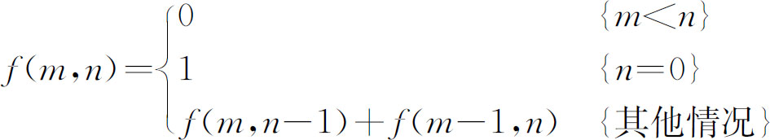
【参考程序】
#include <cstdio>
long longfmn（int a，int b）{
if （a < b）return 0;
else if （b）return fmn（a，b-1）+fmn（a-1，b）;
else return 1;
}
int main（）{
int n;
scanf（"%d"，&n）;
printf（"%d＼n"，fmn（n，n））;
return 0;
}
算法4：递推算法
递归算法的效率比起前两个效率高了不少，原因在于所构造的解答树的结点减少了很多，如求f（4，4）的解答树如图3.5-2所示，结点边的数字表示回溯时得到的该结点的值。
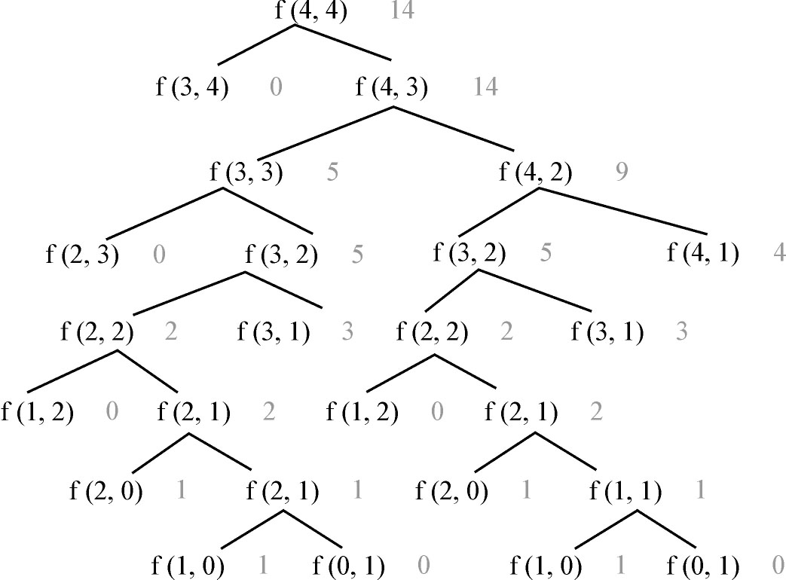
图3.5-2 解答树
递归算法是由终止条件向初始条件推导，而递推算法是由初始条件向终止条件推导。可以说，本质上是相同的。那么，把递归算法改递推算法的意义何在呢？观察上面求f（4，4）的解答树，我们发现，在树中f（3，2）、f（2，2）等这样的结点出现了多次，实际上是重复计算，也就是说递归算法产生了大量数据冗余，这也是递归算法效率不高的主要因素。如何避免大量的数据冗余呢？很简单的思想就是把计算过的结果保存起来，但第2次（以后）用到这些数据时直接调用而不需要重复计算了，显然，求f（n，n）的递推算法，时间和空间复杂度都为Θ（n2 ）。
【参考程序】
#include <cstdio>
#include <cstring>
long long f［20］［20］;
int main（）{
int n;
scanf（"%d"，&n）;
memset（f，0，sizeof （f））;
for （int i=0; i <=n; i++）
for （int j=0; j <=i; j++）
if （j）f［i］［j］=f［i-1］［j］+f［i］［j-1］;
else f［i］［j］=1;
printf（"%d＼n"，f［n］［n］）;
return 0；
}
算法5：组合算法
前面我们讲过本题的结论是Catalan数，即C（2n，n）/（n+1）。当时用的是栈模型，下面我们用排列组合的知识来求出这个结果。
我们用1表示有一个手拿50元钞票的人，用0表示一个手拿100元钞票的人，那么求解的问题可以转化为：n个1和n个0组成一个2n位的二进制数，要求从左到右少秒，1的累计个数不少于0的累计个数，求满足这个条件的二进制数的个数？
在2n位上填入n个1的的方案数为C（2n，n），不填1的其余n位自动填入0。从C（2n，n）中减去不符合要求的方案数就是本题的解。
不符合要求的是指从左到右扫描，出现0的累计个数超过1的累计个数，这时，必然在某一奇数位（假设为2m+1位）上首先出现m+1个0和m个1；而后的2（n-m）-1位上有n-m-1个0和n-m个1，如果把后面这部分2（n-m）-1位中的0和1互换，使之成为n-m个0和n-m-1个1，结果得到一个由n+1个0和n-1个1组成的2n位数。即：一个不符合要求的数对应一个由n+1个0和n-1个1组成的2n位数。
反之，任何一个由n+1个0和n-1个1组成的2n位数，因为0的个数一定多于2个，而2n是偶数，所以一定会在某一个奇数位（假设为2m+1）上出现0的累计数超过1的累计数。同样在后面的部分，把0和1互换，使之成为一个由n个0和n个1组成的2n位数，即n+1个0和n-1个1组成的2n位数，一定对应着一个不符合要求的数。
基于以上两点，所以不符合要求的数的总数为C（2n，n+1）。所以原问题的解即为：C（2n，n）-C（2n，n+1）=C（2n，n）/（n+1）。
【参考程序】
#include <iostream>
using namespace std;
int main（）{
int n;
cin>> n;
long long total=1;
for （int i=0; i < n; i++）
total=total * （2 * n-i）/ （i+1）;
cout<< total/ （n+1）<< endl;
return 0；
}
【测试分析】
对以上5个程序进行测试，结果如下表所示，评测机器配置为：Intel Core i5-3470 CPU 3.20 Ghz/4GB/Windows 2003/Dev-C++4.9.9.2。
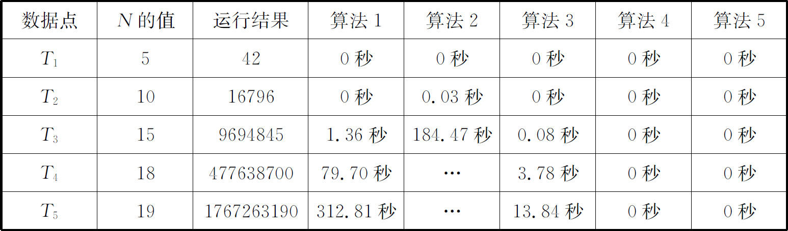
算法5的时间复杂度为Θ（n），而空间复杂度为Θ（1）。
本题的各种解法正好说明了一个问题，一般而言，数学模型越抽象，则越能抓住问题的本质，算法的实现效率也往往越高。当本题的规模再大一些时，就更能体现出来了，同时还会带来高精度运算。
母函数是求解组合数学中计数问题的重要方法，其效率高，编程规范，容易实现。但是，母函数的思想起源和最早应用却是在概率方面。母函数有两种形式：普通型母函数和指数型母函数。
先看下面这个例子：
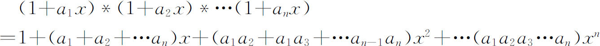
得到：x项的系数：a1 +a2 +…an
x2 项的系数：a1 a2 +a1 a3 +…an-1 an
x3 项的系数：a1 a2 a3 +a1 a2 a4 +…an-2 an-1 an
…
x2 项的系数包含了从n个元素{a1 ，a2 ，a3 ，…an }中选取两个的组合的全体。
令ai =1，则有：a1 a2 +a1 a3 +…an-1 an =C（n，2）
所以：（1+x）n =1+C（n，1）x+C（n，2）x2 +…C（n，n）xn
再令x=1，则得到：C（n，0）+C（n，1）+C（n，2）+…C（n，n）=2n
这正是我们上一节内容中讲到的二项式定理。下面，我们再看一个式子：（1+x）m *（1+x）n =（1+x）m+n
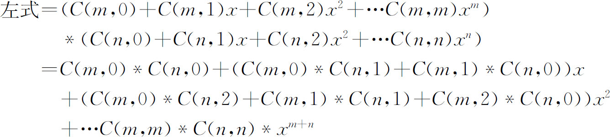
右式=C（m+n，0）+C（m+n，1）x+C（m+n，2）x2 +…C（m+n，m+n）xm+n
左式=右式，比较x的对应系数应该相等，所以又得到了组合中的另一个式子：C（m+n，r）=C（m，0）*C（n，r）+C（m，1）*C（n，r-1）+…C（m，r）*C（n，0）
这一式子的几何意义在组合数学中已经讲的很清楚了。其实，我们还可以通过这些式子推导出很多组合数学中的公式。因此，函数（1+x）n 对研究组合序列C（n，0），C（n，1），C（n，2），…C（n，n）很有价值，对于其他序列也有类似的作用。
定义1：对于序列a0 ，a1 ，a2 ，…，定义G（x）=a0 +a1 x+a2 x2 +…为序列a0 ，a1 ，a2 ，…的母函数。
如（1+x）n 就是C（n，0），C（n，1），C（n，2），…C（n，n）的母函数。
也就是说，我们可以利用（1+x）n 来讨论序列{C（n，k）}的性质，取得许多很好的效果，还可以引入适当的函数，使问题简化，把复杂的问题变成“形式上”的初等代数运算。
我们知道，杨辉三角形中第n行的数字就是（1+x）n 的展开式从低项到高项的各项系数。而：
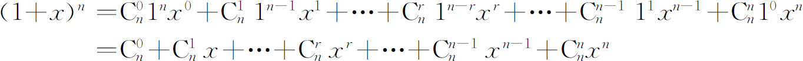
所以，有如下形式的杨辉三角形：
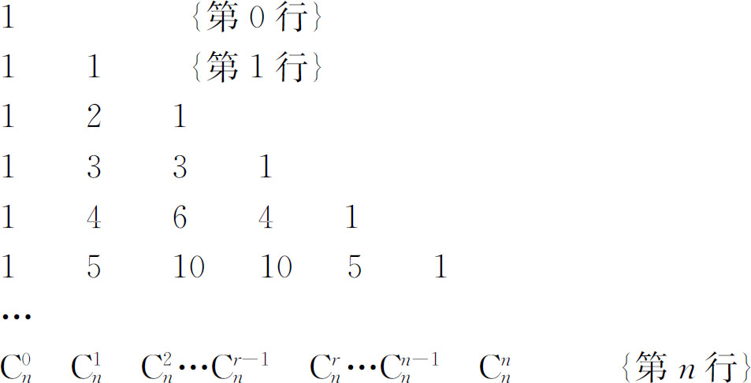
那么（1+x）有什么物理意义呢？把它和选择物品联系起来。在构造和分析一个母函数时，“1”一般看成x0 ，虽然1=x0 ，但是x0 比1具有更为丰富的物理意义，它可以表示没有选取一件物品，而x1 则可以看成选取了一件物品。（x0 +x1 ）n 可对应于从n件物品中选取若干件物品的情况，在这n件物品中，如果没有选取第i件物品，则相当于从第i个括号中取出了x0 ，如果选取了第i件物品，则相当于从第i个括号中取出了x1 ，由于对每一件物品而言，选与不选这两个事件是相互排斥的，也就是说不可能同时选取，也不可能都不选取，所以根据加法原理得到（x0 +x1 ）=（1+x）。而n个物品的选择是独立的，所以再根据乘法原理，得出（1+x）n 。
这样，在一个具体的物品选择中，如果没有选择第i件物品，则相当于从第i个括号中选取了x0 ；如果选择了第i件物品，则相当于从第i个括号中选取了x1 。这样，在（1+x）n 的展开式中，xi 前面的系数就是从n件物品中选取i件物品的所有组合情况的总数，即C（n，i）。
下面给出普通型母函数的定义。
定义2：给定数列a0 ，a1 ，…an ，…，构造一个函数F（x）=a0 f0 （x）+a1 f1 （x）+…an fn （x）+…，称F（x）为数列a0 ，a1 ，…an ，…的母函数，其中序列f0 （x），f1 （x），…fn （x），…只作为标志用，称为标志函数。
标志函数最重要的形式就是xn ，这种情况下的母函数一般形式为：
F（x）=a0 +a1 x+a2 x2 +…+an xn +…
这就是我们研究的重点，下面给出最重要的母函数定理。
定理1：设从n元集合S={a1 ，a2 ，a3 ，…an }中取k个元素的组合是bk ，若限定元素ai 出现的次数集合为Mi （1≤i≤n），则该组合数序列的母函数为：
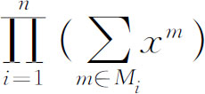
【例3.6-1】 有重量为1，3，5（克）的砝码各两个，问：
（1）可以称出多少种不同重量的物品？
（2）若要称出重量为7克的物品，所使用的砝码有多少种本质上不同的情况？
【问题分析】
根据定理1，构造母函数如下：G（x）=（1+x+x2 ）（1+x3 +x6 ）（1+x5 +x10 ）。其中，第1个括号中的1表示不用重量为1的砝码，x表示用1个重量为1的砝码，x2 表示用2个重量为1的砝码，第2、3个括号中含义类似。我们将上面的多项式展开后，得到诸如x2 *1*x5 之类的多项式，它表示用2个重量为1的砝码、0个重量为3的砝码和1个重量为5的砝码，可以称出一个重量为7的物品，这是一种称7克物品的方法。显然，当把G（x）这个多项式展开并合并同类项后，有多少个系数非0的项，就代表了可以称出多少种不同重量的物品，而相应的xi 前面的系数就表明了称出重量为i的物品可选砝码的方案数。所以：
G（x）=1+x+x2 +x3 +x4 +2x5 +2x6 +2x7 +2x8 +x9 +2x10 +2x11 +2x12 +2x13 +x14 +x15 +x16 +x17 +x18
即：问题（1）的解为19，问题（2）的解为2。
下面是几个常见的母函数（n是正整数）：
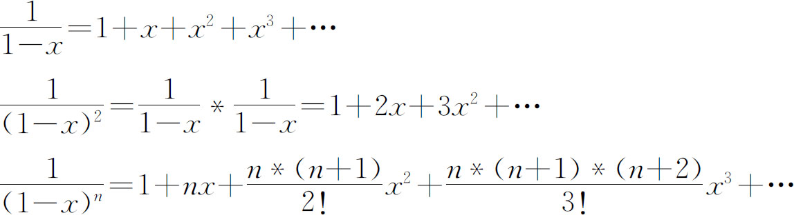
【例3.6-2】 求n位十进制正数中出现偶数个5的数的个数。
【问题分析】
设d=d1 d2 d3 …dn-1 是n-1位十进制数，若d含有偶数个5，则dn 取5以外的9个数字中的任一个，使d1 d2 d3 …dn-1 dn 构成偶数个5的n位十进制数；若d含有奇数个5，则取dn =5，使d1 d2 d3 …dn-1 dn 构成偶数个5的n位十进制数。
现在设an 表示n位十进制数中出现偶数个5的数的个数，bn 表示n位十进制数中出现奇数个5的数的个数，则：
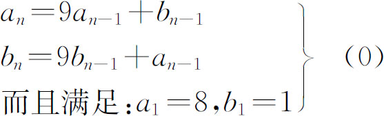
即：an -9an-1 -bn-1 =0
bn -9bn-1 -an-1 =0
设：序列{an }、{bn }的母函数分别为：
A（x）=a1 +a2 x+…+an xn-1 +… （1）
B（x）=b1 +b2 x+…+bn xn-1 +… （2）
则：（1）式两边同乘以-9x，得到（3）式；
（2）式两边同乘以-x，得到（4）式；
把（1）、（3）、（4）三个等式左右两边都相加，得：
（1-9x）A（x）-xB（x）=a1 =8 （5）
同理，（2）式两边同乘以-9x，得到（6）式；
（1）式两边同乘以-x，得到（7）式；
把（2）、（6）、（7）三个等式左右两边都相加，根据（0）式的递推关系得到：
（1-9x）B（x）-xA（x）=b1 =1 （8）
由（5）、（8）得到：
A（x）=（-71x+8）/（（1-8x）（1-10x））
B（x）=（1-x）/（（1-8x）（1-10x））
设
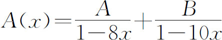
得到：A=7/2
B=9/2
所以：
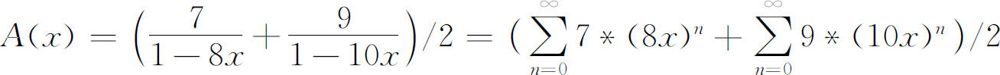
所以：an =（7*8n-1 ）/2+（9*10n-1 ）/2
指数型母函数由如下定理来描述。
定理2：从多重集合M={∞*a1 ，∞*a2 ，∞*a3 ，…∞*an }中选取k个元素的排列中，若限定元素ai 出现的次数集合为Mi （1≤i≤n），则该组合数序列的母函数为：
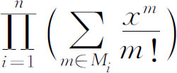
比较普通型母函数和指数型母函数，可以看出普通型母函数的标志函数为1，x，x2 ，x3 ，…；而指数型母函数的标志函数为1，x/1!，x2 /2!，x3 /3!，…。指数型母函数的标志函数的物理意义可以这样来理解。对于xj /j!表示在一个方案中某个元素出现了j次，而在不同的位置中的j次出现是相同的，所以在计算排列总数时，只应算作一次。由排列组合的知识知道，最后的结果应该除以j!。
另外在指数型母函数的使用过程中，一般都会用到高等数学里介绍的ex 的Taylor展开式：
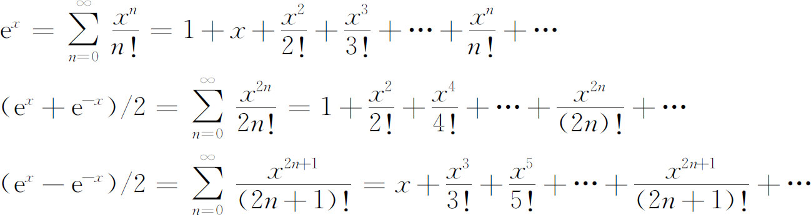
指数型母函数应该化简成如下的形式：
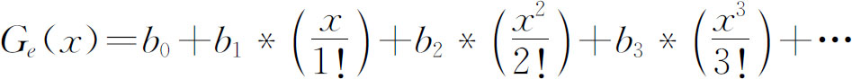
只有bi 才是我们所需要的结果，下面举例说明。
【例3.6-3】 设有六个数字，其中三个数字1，两个数字6，一个数字8，问能组成多少个四位数？
【问题分析】
这实际上是求S={3x1 ，2x2 ，1x3 }中取四个的多重集排列数问题，其指数型母函数为：
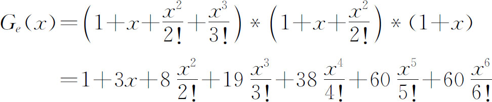
所以，可以组成38个四位数。
【例3.6-4】 由1，2，3，4这四个数字能构成多少个五位数，要求这些五位数中1出现两次或三次，2最多出现一次，4出现偶数次。
【问题分析】
1出现两次或三次，对应的母函数为：
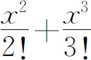
2最多出现一次，对应的母函数为：
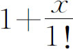
3的出现次数不作要求，所以对应的母函数为：
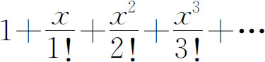
4出现偶数次，所以对应的母函数为：
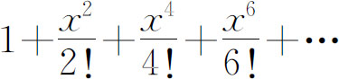
所以，可得下面的母函数：
所以，满足题意的五位数共有：
【例3.6-5】 求1，3，5，7，9这5个数字组成的n位数个数，要求其中3和7出现的次数为偶数，其他数字出现的次数无限制。
【问题分析】
设满足条件的r位数的数目为ar ，则序列a0 ，a1 ，a2 ，…的母函数为：
所以，
所以， 。
【例3.6-6】 质数分解问题（primedec.*，64 MB，1秒）
【问题描述】
任何大于1的自然数n都可以写成若干个大于等于2且小于等于n的质数之和的表达式（包括只有一个数构成的质数之和的表达式的情况），并且可能有不止一种质数和的形式。例如9的质数和表达式就有4种本质上不同的形式：
9=2+5+2=2+3+2+2=3+3+3=2+7
这里所谓两个本质相同的表达式是指可以通过交换其中一个表达式中参加和运算的各个数的位置而直接得到另一个表达式。
编程，求解自然数n（2<n<200）可以写成多少种本质不同的质数和表达式。
【问题分析】
本题可以用搜索等方法求解，但效率显然不能让人满意，下面我们考虑用母函数的方法求解。
构造如下的普通型母函数：
G（x）=（1+x2 +x4 +x6 +…）*（1+x3 +x6 +x9 +…）*（1+x5 +x10 +x15 +…）*…
在第一个括号中，x的指数都是2的倍数，其中“1”可以看做x0 ；在第二个括号中，x的指数都是3的倍数，在第三个括号中，x的指数都是5的倍数，……，在任意一个括号中，x的指数一定都为某一质数的倍数，将多项式展开后，xn 前面的系数便是我们所求的方案数。例如，对于题目中所给出的式子：9=2+5+2=2+3+2+2=3+3+3=2+7，我们可以写成指数的形式：
x9 =x2 *x5 *x2 =x4 *x5 =x2 *x3 *x2 *x2 =x6 *x3 =x3 *x3 *x3 =x9 =x2 *x7
上面式子的第一行表示，在第一个括号中提出x4 ，在第二个括号中提出1，在第三个括号中提出x5 ，这样便得到了x9 。对于第二、三、四行的意义也如此。
【参考程序】
#include <vector>
#include <cstring>
#include <cstdio>
using namespace std;
bool temp［201］;
int pol［201］;
vector<int> prime;
int main（）{
memset（temp，true，sizeof （temp））;
prime.clear（）;
for （int i=2; i <=200; i++）
if （temp［i］）{
prime.push_back（i）;
for （int j=i * i; j <=200; j+=i）temp［j］=false;
}
int n;
scanf（"%d"，&n）;
memset（pol，0，sizeof （pol））;
pol［0］=1;
for （int i=0; i < prime.size（）&& prime［i］ <=n; i++）
for （int j=n; j >=0; j--）
if （pol［j］）
for （int add=prime［i］; add+j <=n; add+=prime［i］）pol［add+j］+=pol［j］;
printf（"%d＼n"，pol［n］）;
return 0;
}
【例3.6-7】 红色病毒问题（redvirus.*，64 MB，1秒）
【问题描述】
最近医学研究者发现了一种新病毒，因为其蔓延速度与最近在Internet上传播的“红色代码”不相上下，故被称为“红色病毒”。经研究发现，该病毒及其变种的DNA的一条单链中，胞嘧啶、腺嘧啶均是成对出现的。这虽然是一个重大发现，但还不是该病毒的最主要特征，因为这个特征实在太弱。为了搞清楚该病毒的特征，软件工程师G对此产生了兴趣。他想知道在这个特征下，可能成为病毒的DNA序列的个数。更精确地说，G需要统计所有满足下列条件的长度为n（1≤n≤109 ）的字符串个数：
1．字符串仅由A、T、C、G四个大写英文字母组成；
2．A出现偶数次（也可以不出现）；
3．C出现偶数次（也可以不出现）；
当n=2时，所有满足条件的字符串有如下六个：TT、TG、GT、GG、AA、CC。
由于这个数可能非常庞大，你只需要给出最后两位数字即可。
【问题分析】
本题的解法很多，在此我们只讨论母函数解法。
由于字符串由A、T、C、G四个英文字母组成，且每个字母的出现次数均可多于一次，所以此题可以应用指数型母函数求解。
设an 是满足条件的长度为n的字符串个数，则对于数列{an }的指数型母函数为：
Ge （x）=（1+x2 /2!+x4 /4!+…）2 *（1+x+x2 /2!+x3 /3!+…）2
其中第一个括号表示A、C只能出现偶数次（包括不出现的情况），第二个括号表示T、G可以出现任意多次，化简得到：
所以，有： ，其中n=1，2，3，…
an 即为满足条件的、长度为n的字符串的个数。另bn =an mod 100，则bn 即为本题的解。因为题目中输入数据的范围是1≤n≤109 ，所以需要对bn 进行化简。
对于n=1，2，an ≡2（mod 4）
当n>2时，an =4n-2 *4+2n-3 *4=（4n-2 +2n-3 ）*4，所以an ≡0（mod 4）
因为220 ≡16*（162 ）2 ≡16*2562 ≡16*62 ≡16*36≡16*11≡176≡1（mod 25）
所以420 ≡（220 ）2 ≡12 ≡1（mod 25）
所以4m+20 +2m+20 ≡4m *420 +2m *220 ≡4m *1+2m *1≡4m +2m （mod 25）
又因为当n>2时，an ≡0（mod 4）且GCD（4，25）=1
所以，对于{bn }，20是它的一个周期。
【参考程序】
#include <cstdio>
int ans［25］;
int main（）{
int n;
scanf（"%d"，&n）;
for （int j=1; j <=24; j++）{//产生n=1，2时的特殊情况和一个周期的结果
//本题中公式可以变形为an=4^（n-1）+2^（n-1）
int a1=1，a2=1;
for （int i=0; i < j-1; i++）{
a1=a1 * 2 % 100;
a2=a2 * 4 % 100;
}
ans［j］=（a1+a2）% 100;
}
if （n >=4）{
n %=20;
if （n < 4）n+=20;
}
printf（"%d＼n"，ans［n］）;
return 0;
}
【例3.6-8】 K阶求和数列（ksum.*，128 MB，3秒）
【问题描述】
对于一个序列A，S1 为A一阶求和序列，即，S1 的一阶求和序列S2 则为A的二阶求和序列，…以此类推SK 为A的K阶求和序列。现在要实现以下两个操作：
C L R D：在A序列的［L，R］位置所有数同时加上D。
Q L R：询问SK 序列的［L，R］位置所有数的和对109 +7取模的结果。
【输入格式】
第一行是三个正整数N，M，K。其中N表示序列的长度、M表示操作次数、K表示询问的序列是SK 。
接下来M行，每行代表一个操作，格式如题目描述。
初始A序列中所有数都为0，序列从1开始标号：A1 ，A2 ，A3 …。
【输出格式】
对于每一个询问输出一行一个整数，表示答案对109 +7取模的结果。
【样例输入】
5 5 1
Q 1 5
C 2 3 1
Q 1 5
C 4 5 2
Q 2 5
【样例输出】
0
7
13
【数据说明】
对于30%的数据：N≤20 000，M≤1 000，k≤10；
另外30%的数据：N≤200 000，M≤10 000，k=1；
另外20%的数据：N≤200 000，M≤10 000，k=2；
最后20%的数据：N≤200 000，M≤200 000，k≤10；
【问题分析】
算法1．暴力修改，暴力查询。时间复杂度O（N*M*K），空间复杂度Θ（N），期望得分30分。
算法2．K=1时是不是可以单独做？考虑每一次的修改可以看成是两次对一个前缀的修改，即［1，R］同时加上D，［1，L-1］同时加上-D。对于询问，也可以用S2 ［R］-S2 ［L-1］，我们观察一下，每一次修改所产生的影响的。
对于一个修改［1，X］同时加D。
我们发现对于一个位置R，修改{X，D}，即［1，X］同时加D，对它的影响是这样的：
那么，对于多个修改｛Xn ，Dn ｝
于是，我们只要维护：
就可以了，这些都可以用树状数组（或者线段树）实现。这样就可以拿到60分!
算法3．当K=3时是不是也可以用和算法2类似的方法来做？答案是肯定的，只是推导比较繁琐。
同样，我们只需要维护：
就可以了，同样可以用树状数组（或者线段树）实现。综合上述3个算法，就可以得到80分！
算法4．对K=3、4、5、…10，理论上都可以用类似算法2的方法求解。但是，对于每一个K都要计算一遍要维护的所有系数，而且大家也发现K越大，要维护的东西越多、越复杂。所以说这是不切实际的!
那么，我们如何才能解决这个问题呢？下面介绍一种用母函数求解的方法。为了方便，我们将所有序列从0开始标号，并令K=K+1；
对于一个修改{L-1，D}的ΔA的生成函数是：g(x)=D*(1+x+x2 …+xL-1 )。
每一次求前缀和相当于乘上一个无穷多项式(1+x+x2 …)，那么，ΔSK 的生成函数就是：
又因为：
所以，gK(x)=D*(1-xL )*(1+x+x2 …)k
而ΔSK ［R］就等于gK(x)展开后xr 项的系数。所以：
当R≤L时：
当R>L时：
这里有一个小优化：我们发现不管R取何值，ΔSK ［R］总有一项是 ，我们再想一想，最原始的修改操作是{l，r，D}，我们只不过将它分解为{r，D}和{l-1，-D}，{r，D}操作ΔSK ［R］一定会 ，{l-1，-D}操作ΔSK ［R］一定会 ，相互抵消。于是，我们只需要进行的操作是：
当R>L时：
这样，我们只需要预处理出 展开式中R的若干次方的系数，再用树状数组（或者线段树）维护这些系数。
【参考程序】
#include<iostream>
#include<stdio.h>
#include<stdlib.h>
#include<string.h>
#include<math.h>
#include<algorithm>
#define L long long
using namespace std;
int n，m，p，w［11］［11］，v［11］［11］，u［11］，a［11］，
f［600000］，g［600000］［11］，s［600000］［11］，q=1000000007，ans，l，r，x;
char t［10］;
inline void add（int i，int j，int k，int l）{
int t;
if（l<=j）{
for（t=0;t<=p;t++）{
f［i］=（f［i］+（L）u［t］*s［i］［t］）%q;
g［i］［t］=（g［i］［t］+u［t］）%q;
}
}
else{
for（t=0;t<=p;t++）{
f［i*2］=（f［i*2］+（L）g［i］［t］*s［i*2］［t］）%q;
g［i*2］［t］=（g［i*2］［t］+g［i］［t］）%q;
f［i*2+1］=（f［i*2+1］+（L）g［i］［t］*s［i*2+1］［t］）%q;
g［i*2+1］［t］=（g［i*2+1］［t］+g［i］［t］）%q;
g［i］［t］=0;
}
add（i*2+1，（j+k）/2+1，k，l）;
if（l<=（j+k）/2）
add（i*2，j，（j+k）/2，l）;
f［i］=（f［i*2］+f［i*2+1］）%q;
}
}
inline int ask（int i，int j，int k，int l，int r）{
if（l<=j && r>=k）
return f［i］;
else{
int t;
for（t=0;t<=p;t++）{
f［i*2］=（f［i*2］+（L）g［i］［t］*s［i*2］［t］）%q;
g［i*2］［t］=（g［i*2］［t］+g［i］［t］）%q;
f［i*2+1］=（f［i*2+1］+（L）g［i］［t］*s［i*2+1］［t］）%q;
g［i*2+1］［t］=（g［i*2+1］［t］+g［i］［t］）%q;
g［i］［t］=0;
}
t=0;
if（l<=（j+k）/2）
t+=ask（i*2，j，（j+k）/2，l，r）;
if（r>（j+k）/2）
t+=ask（2*i+1，（j+k）/2+1，k，l，r）;
return t%q;
}
}
inline void xds（int l，int x）{
int i，j，k;
for（i=0;i<=p;i++）{
u［i］=0;
for（j=0，k=1;i+j<=p;j++，k=（L）k*l%q）
u［i］=（u［i］+（L）k*w［i］［j］）%q;
u［i］=（L）u［i］*x%q;
}
add（1，1，n，l）;
}
int main（）{
int i，j，k;
scanf（"%d%d%d"，&n，&m，&p）;
w［0］［0］=1;
for（i=1;i<=p;i++）{
for（j=0;j<i;j++）
for（k=0;j+k<i;k++）{
v［j+1］［k］=（v［j+1］［k］+w［j］［k］）%q;
v［j］［k+1］=（v［j］［k+1］-w［j］［k］）%q;
v［j］［k］=（v［j］［k］+（L）w［j］［k］*i）%q;
}
for（j=0;j<=i;j++）
for（k=0;j+k<=i;k++）{
w［j］［k］=v［j］［k］;
v［j］［k］=0;
}
}
for（i=1;i<=n;i*=2）;
n=i;
for（i=1;i<=n;i++）{
s［n+i-1］［0］=1;
for（j=1;j<=p;j++）
s［n+i-1］［j］=（L）s［n+i-1］［j-1］*i%q;
}
for（i=n-1;i>0;i--）
for（j=0;j<=p;j++）
s［i］［j］=（s［i*2］［j］+s［i*2+1］［j］）%q;
a［0］=a［1］=1;
for（i=2;i<=p;i++）{
a［i］=-q/i*（L）a［q%i］%q;
a［0］=（L）a［0］*a［i］%q;
}
for（i=1;i<=m;i++）{
scanf（"%s"，&t）;
if（t［0］=='C'）{
scanf（"%d%d%d"，&l，&r，&x）;
xds（l，x）;
if（r<n）
xds（r+1，-x）;
}
else{
scanf（"%d%d"，&l，&r）;
ans=（L）ask（1，1，n，l，r）*a［0］%q;
ans=（ans+q）%q;
printf（"%d＼n"，ans）;
}
}
return 0;
}
莫比乌斯反演在许多情况下能大大简化运算。下面，先介绍莫比乌斯反演公式。
定理：F(n)和f(n)是定义在非负整数集合上的两个函数，并且满足条件 。那么，我们得到结论：
在上面的公式中有一个μ(d)函数，它的定义如下：
（1）若d=1，那么μ(d)=1
（2）若d=p1 p2 …pk ，pi 均为互异素数，那么μ(d)=(-1)k
（3）其他情况下μ(d)=0
对于μ(d)函数，它有如下的常见性质：
（1）对任意正整数n有：
（2）对任意正整数n有：
用线性筛选求莫比乌斯反演函数的代码：
void Init（）{
memset（vis，0，sizeof（vis））;
mu［1］=1;
cnt=0;
for（int i=2; i<N; i++）{
if（!vis［i］）{
prime［cnt++］=i;
mu［i］=-1;
}
for（int j=0; j<cnt&&i*prime［j］<N; j++）{
vis［i*prime［j］］=1;
if（i%prime［j］）mu［i*prime［j］］=-mu［i］;
else{
mu［i*prime［j］］=0;
break;
}
}
}
}
有了上面的知识，现在，我们来证明莫比乌斯反演定理。
证明：
证明完毕！
【例3.7-1】 最大公约数为质数的数对（gcdprime.*，128 MB，1秒）
【问题描述】
给定一个正整数n，其中n≤107 ，求使得gcd（x，y）为质数的（x，y）的个数，1≤x，y≤n。
【问题分析】
对于本题，因为是使得gcd（x，y）为质数，所以必然要枚举小于等于n的质数，那么对于每一个质数pi ，只需要求在区间［1，n/pi ］中，满足有序对（x，y）互质的对数。也就是说，现在问题转化为：在区间［1，r］中，存在多少个有序对使得（x，y）互质，这个问题就简单啦，因为是有序对，不妨设x≤y，那么我们如果枚举每一个y，小于y有多少个x与y互素，这正是欧拉函数。所以，我们可以递推法求欧拉函数，将得到的答案乘以2即可，但是这里乘以2后还有漏计算了的，那么有哪些呢？是x=y且为素数的情况，再加上就行了。
【参考程序】
#include <iostream>
#include <string.h>
#include <stdio.h>
#include <bitset>
using namespace std;
typedef long long LL;
const int N=10000010;
bitset<N> prime;
LL phi［N］;
LL f［N］;
int p［N］;
int k;
void isprime（）{
k=0;
prime.set（）;
for（int i=2; i<N; i++）{
if（prime［i］）{
p［k++］=i;
for（int j=i+i; j<N; j+=i）
prime［j］=false;
}
}
}
void Init（）{
for（int i=1; i<N; i++）phi［i］=i;
for（int i=2; i<N; i+=2）phi［i］ >>=1;
for（int i=3; i<N; i+=2）{
if（phi［i］==i）{
for（int j=i; j<N; j+=i）
phi［j］=phi［j］-phi［j］/ i;
}
}
f［1］=0;
for（int i=2;i<N;i++）
f［i］=f［i-1］+（phi［i］<<1）;
}
LL Solve（int n）{
LL ans=0;
for（int i=0; i<k&&p［i］<=n; i++）
ans+=1+f［n/p［i］］;
return ans;
}
int main（）{
Init（）;
isprime（）;
int n;
scanf（"%d"，&n）;
printf（"%I64d＼n"，Solve（n））;
return 0;
}
【例3.7-2】 最大公约数为质数的数对2（gcdprime2.*，128 MB，1秒）
【问题描述】
给定两个正整数n和m，其中1≤x≤n，1≤y≤m，1≤n，m≤107 ，求gcd（x，y）为质数的（x，y）有多少对。注意：本题有多组测试数据。
【问题分析】
本题是例3.7-1的升级版，不同的是n和m不一定相同，下面我们用莫比乌斯反演来解决，看看它是如何简化运算的。
我们知道莫比乌斯反演的一般描述为：
其实，它还有另一种描述，本题也是用到这种。那就是：
对于本题，我们设f（n）为满足gcd（x，y）=d且1≤x≤n和1≤y≤m的（x，y）的对数。
F（d）为满足d｜gcd（x，y）且1≤x≤n和1≤y≤m的（x，y）的对数。
那么，很显然 ，反演后得到：
因为题目要求的是gcd（x，y）为质数，那么，我们枚举每一个质数p，然后得到：
如果直接这样做肯定超时，我们必须优化。
我们设T=pd，那么继续得到： 。
可以看出，如果我们可以先预处理出所有的T对应的 的值，那么本题就解决了。
我们设 ，sum（x）是g（x）前缀和。
1．如果k整除x，那么μ（kx）=0，g（kx）=μ（x）；
2．如果k不整除x，那么μ（kx）=-μ（x），g（kx）=μ（x）-g（x）。
【参考程序】
#include <iostream>
#include <string.h>
#include <stdio.h>
using namespace std;
typedef long long LL;
const int N=10000005;
bool vis［N］;
int p［N］;
int cnt;
int g［N］，u［N］，sum［N］;
void Init（）{
memset（vis，0，sizeof（vis））;
u［1］=1;
cnt=0;
for（int i=2;i<N;i++）{
if（!vis［i］）{
p［cnt++］=i;
u［i］=-1;
g［i］=1;
}
for（int j=0;j<cnt&&i*p［j］<N;j++）{
vis［i*p［j］］=1;
if（i%p［j］）{
u［i*p［j］］=-u［i］;
g［i*p［j］］=u［i］-g［i］;
}
else{
u［i*p［j］］=0;
g［i*p［j］］=u［i］;
break;
}
}
}
sum［0］=0;
for（int i=1;i<N;i++）
sum［i］=sum［i-1］+g［i］;
}
int main（）{
Init（）;
int T;
scanf（"%d"，&T）;
while（T--）{
LL n，m;
cin>>n>>m;
if（n > m）swap（n，m）;
LL ans=0;
for（int i=1，last;i<=n;i=last+1）{
last=min（n/（n/i），m/（m/i））;
ans+=（n/i）*（m/i）*（sum［last］-sum［i-1］）;
}
cout<<ans<<endl;
}
return 0;
}
【例3.7-3】 约数个数和（2015年山东省队选拔，divisor.*，128 MB，2秒）
【问题描述】
设d（x）为x的约数个数，给定N、M，求 的值。
【输入格式】
输入文件包含多组测试数据。
第一行，一个整数T，表示测试数据的组数。
接下来的T行，每行两个整数N、M。
【输出格式】
T行，每行一个整数，表示你所求的答案。
【样例输入】
2
7 4
5 6
【样例输出】
110
121
【数据规模和约定】
| 测试点编号 | N、M的范围 | T的范围 |
| 1 | 1≤N,M≤100 | 1≤T≤50000 |
| 2 | ||
| 3 | 1≤N,M≤1000 | 1≤T≤10 |
| 4 | ||
| 5 | ||
| 6 | 1≤N,M≤50000 | |
| 7 | ||
| 8 | 1≤T≤50000 | |
| 9 | ||
| 10 |
【问题分析】
首先证明：
对于nm的每个质因数p，设n=n_*p^a，m=m_*p^b，那么nm=n_*m_*p^（a+b），p对d（nm）的贡献是a+b+1。在等式的右边里，（i_*p^a，j_），（i_*p^（a-1），j_），…，（i_，j_），…，（i_，j_*p^b）都是可行的数对，共a+b+1个，因此上式成立。
那么：
记 ，则我们要求的是
【参考程序】
#include<cstdio>
#include<cstring>
#include<iostream>
using namespace std;
typedef long long ll;
int gcd（int a，int b）{return b？gcd（b，a%b）:a;}
const int maxn=50001;
int tot，prime［30001］，mu［maxn］，c［maxn］;
ll d［maxn］;
bool isprime［maxn］;
ll Ans［101］［101］;
void genPrime（int n）{
memset（isprime，true，sizeof isprime）;
mu［1］=d［1］=c［1］=1;
for（int i=2;i<=n;++i）{
if（isprime［i］）{
prime［tot++］=i;
mu［i］=-1;
c［i］=1;
d［i］=2;
}
for（int j=0;j<tot&&i*prime［j］<=n;++j）{
isprime［i*prime［j］］=false;
if（i%prime［j］==0）{
d［i*prime［j］］=d［i］/（c［i］+1）*（c［i］+2）;
c［i*prime［j］］=c［i］+1;break;
}
mu［i*prime［j］］=-mu［i］;
d［i*prime［j］］=d［i］*d［prime［j］］;
c［i*prime［j］］=1;
}
}
for（int i=1;i<=n;++i）mu［i］+=mu［i-1］;
for（int i=1;i<=n;++i）d［i］+=d［i-1］;
}
inline int read（）{
int x=0;char ch=getchar（）;
while（!isdigit（ch））ch=getchar（）;
while（isdigit（ch））x=x*10+ch-48，ch=getchar（）;
return x;
}
char a［18］;
inline void print（ll x）{
a［0］=0;
while（x）a［++a［0］］=x%10，x/=10;
for（;a［0］;--a［0］）
putchar（a［a［0］］+48）;
putchar（′＼n′）;
}
int main（）{
genPrime（50000）;
int t=read（）;
while（t--）{
int n=read（），m=read（）;
if（n<=100&&m<=100）{
if（Ans［n］［m］）{
print（Ans［n］［m］）;
continue;
}
}
if（n>m）swap（n，m）;
ll ans=0;
for（int i=1，nex;i<=n;i=nex+1）{
nex=min（n/（n/i），m/（m/i））;
ans+=（mu［nex］-mu［i-1］）*d［n/i］*d［m/i］;
}
if（n<=100&&m<=100）Ans［n］［m］=Ans［m］［n］=ans;
print（ans）;
}
return 0;
}
Lucas（卢卡斯）定理是用来求 C（n，m）mod p的值。其中：n和m是非负整数，p是素数。一般用于m、n很大而p很小，或者n，m不大但大于p，这样用阶乘就解决不了。
Lucas定理的结论1：Lucas（n，m，p）=cm（n%p，m%p）*Lucas（n/p，m/p，p）；
Lucas（x，0，p）=1；
Lucas定理的结论2：把n写成p进制a［n］a［n-1］a［n-2］…a［0］，把m写成p进制b［n］b［n-1］b［n-2］…b［0］，则C（n，m）与C（a［n］，b［n］）*C（a［n-1］，b［n-1］）*C（a［n-2］，b［-2］）*…*C（a［0］，b［0］）模p同余。
下面给出Lucas定理的实现代码：
//注意C（n mod p，m mod p）可能出现n mod p<m mod p，那就直接是0。因为若n<m，则C（n，m）=0。
int getc（int n，int m）{
if（n<m）return 0;
if（m>n-m）m=n-m;
ll s1=1，s2=1;
for（int i=0;i<m;i++）{
s1=s1*（n-i）%p;
s2=s2*（i+1）%p;
}
return s1*qpow（s2，p-2）%p;
//qpow是快速幂，求s2的（p-2）次方，用于求逆元
//如果要大量运用lucas定理，建议用杨辉三角打组合的表或将阶乘（以及阶乘逆元）打表
}
int lucas（int n，int m）{
if（m==0）return 1;
return getc（n%p，m%p）*lucas（n/p，m/p）%p;
}
【例3.8-1】 Saving Beans（HDU3037）
【问题描述】
题目大意是有n个不同的盒子，在每个盒子中放一些球（可以不放），使得总球数小于等于m，求方案数（mod p）。
数据范围：1≤n，m≤109 ，1<p<105 ，p保证是素数。
【输入样例】
2
1 2 5
2 1 5
【输入样例】
3
3
【问题分析】
若最后放了k个球（k≤m），根据“挡板法”有方案数为C（k+n-1，n-1），则总方数为：
C（n-1，n-1）+C（n，n-1）+C（n+1，n-1）+…+C（n+m-2，n-1）+C（n+m-1，n-1）=C（n+m，n）
换一个思路来理解，我们有n+1个盒子来放球，使得总个数为m，这样我前n个盒子就当做题目中要的盒子，所以答案就是将m个求放入n+1个盒子的方案，就是C（n+m，n）。最后就是使用Lucas定理编程实现了。
【参考代码】
#include<cstdio>
#include<cstring>
#include<iostream>
#include<algorithm>
using namespace std;
const int MAXN=1e6;
long long a［MAXN］，p;
long long qpow（long long x，long long m）{
if （m==0）return 1;
long long tmp=qpow（x ，m/ 2）;
tmp=（tmp * tmp）% p;
if （m % 2==1）tmp=（tmp * x）% p;
return tmp;
}
long long getc（long long n，long long m）{
if （m > n）return 0;
return （a［n］ * qpow（a［m］，p-2））% p * qpow（a［n-m］，p-2）% p;
}
long long lucas（long long n，long long m）{
if（m==0）return 1;
return getc（n%p，m%p）*lucas（n/p，m/p）%p;
}
int main（）{
int numcase;
cin>>numcase;
while （numcase--）{
int n，m;
cin>>n>>m>>p;
a［0］=1;
for （int i=1;i<=p;i++）a［i］=（a［i-1］*i）%p;
cout<<lucas（n+m，n）<<endl;
}
return 0；
}
【例3.8-2】 Tom and matrix（HDU5226）
【问题描述】
题目大意是给定一个矩阵a，a［i］［j］=C［i］［j］（i≥j）or 0（i<j），求（x1 ，y1 ），（x2 ，y2 ）这个子矩阵里面的所有数的和。
数据范围：0≤x1 ≤x2 ≤105 ，0≤y1 ≤y2 ≤105 ，2≤p≤109 ，p保证是素数。
【输入样例】
0 0 1 1 7
1 1 2 2 13
1 0 2 1 2
【输入样例】
3
4
1
【问题分析】
首先用容斥原理，将问题转化为求（0，0），（x，y）这个子矩阵里面的所有数的和。然后分析这个矩阵，按列看，第k列为：
C（0，k）+C（1，k）+C（2，k）+…+C（x，k）=C（x+1，k+1）
因此，答案为：C（x+1，1）+…+C（x+1，y+1））。
所以，只要计算每一个C（n,m），很容易想到C（n，m）=n!/m!/（n-m）!，因此，只要将n!（以及逆元）打表。看似完美但是有问题，若p很小，那n! mod p=0，m! mod p=0，（n-m）! mod p=0，也就是说n!、m!、（n-m）!中都有p这个因子，但约分后组合数中却没有，但用之前的算法算出来的是0，而这时用Lucas定理就没这个问题，但Lucas定理的中C（n，m）的n、m会达到p的级别。怎么办？对p较大时，用原始方法（阶乘），p较小时用Lucas定理，可以用105 来界定p的大小。
【参考代码】
#include<cstdio>
#include<cstring>
#include<iostream>
#include<algorithm>
using namespace std;
const int maxn=100005;
long long a［maxn］，b［maxn］，X1，X2，Y1，Y2，P，ans;
int n;
long long qpow（long long x，long long m）{
if （m==0）return 1;
long long tmp=qpow（x ，m/ 2）;
tmp=（tmp * tmp）% P;
if （m % 2==1）tmp=（tmp * x）% P;
return tmp;
}
long long combin（int x，int y）{
if （x > y）return 0;
return （a［y］ * b［x］）% P * b［y-x］ % P;
}
long long c（int x，int y）{
if （x > y）return 0;
if （y >=P）return combin（x % P，y % P）*c（x/ P，y/ P）% P;
else return combin（x，y）;
}
int main（）{
while （cin >> X1 >> Y1 >> X2 >> Y2 >> P）{
a［0］=b［0］=1;
for （int i=1; i <=min（X2+1，P-1）; i++）{
a［i］=（a［i-1］ * i）% P;
b［i］=qpow（a［i］，P-2）;
}
ans=0;
for （int i=Y1; i <=Y2; i++）{
（ans+=c（i+1，X2+1）-c（i+1，X1））%=P;
}
（ans+=P）%=P;
cout<< ans << endl;
}
return 0;
}
1．有8位同学排成一列，其中4位女生，要求同性别的人不相邻，问有多少种排法？
2．A，B，C，D，E，F排在1，2，3，4，5，6这六个位置，问A不在1，B不在2，C不在3的排列的种数？
3．6个身高不同的人分成2排，每排3人，每排从左到右，由低到高，且后排的人比他身前的人高，问有多少种排法？
4．从5位男同学和4位女同学中选出4位参加一个座谈会，要求与会成员中既有男同学又有女同学，有几种不同的选法？
5．晚会上有5个不同的唱歌节目和3个不同的舞蹈节目，问：分别按以下要求各可排出几种不同的节目单？
（1）3个舞蹈节目排在一起；
（2）3个舞蹈节目彼此分隔；
（3）3个舞蹈节目先后顺序一定；
6．某保密单位有m个人，规定只有当n个人到场时才能打开门，n≤m，现在有三个问题：
（1）门上要装多少锁？
（2）每人分配多少把钥匙？
（3）如何分配这些钥匙？
例如：m=4，n=2，门上应装4个锁，每人3把钥匙，可以按下面的方法分配钥匙：
7．现从A、B、C这3个字母中可重复地抽7个出来。若其中规定包含最多1个A、最少1个B、1到2个C，问有多少种抽法？
8．如规定6≤a，b，c≤10，则方程a+b+c=28有多少个解？
9．一次性投掷两个骰子，问掷出6点，有多少种可能法？
10．求用1角、2角、3角的邮票贴出不同数值的方案数。
11．整数n拆分成1、2、3、…m的和，并允许重复，若其中m至少出现一次，其母函数如何构造？
12．Code（POJ1850）
【问题描述】
Transmitting and memorizing information is a task that requires different coding systems for the best use of the available space．A well known system is that one where a number is associated to a character sequence．It is considered that the words are made only of small characters of the English alphabet a，b，c，…，z （26 characters）．From all these words we consider only those whose letters are in lexigraphical order （each character is smaller than the next character）．
The coding system works like this:
● The words are arranged in the increasing order of their length．
● The words with the same length are arranged in lexicographical order （the order from the dictionary）．
● We codify these words by their numbering，starting with a，as follows:
a-1
b-2
…
z-26
ab-27
…
az-51
bc-52
…
vwxyz-83681
…
Specify for a given word if it can be codified according to this coding system．For the affirmative case specify its code．
【输入格式】
The only line contains a word．There are some constraints:
● The word is maximum 10 letters length
● The English alphabet has 26 characters．
【输出格式】
The output will contain the code of the given word，or 0 if the word can not be codified．
【输入样例】
bf
【输出样例】
55
13．Number Sequence（POJ1019）
【问题描述】
A single positive integer i is given．Write a program to find the digit located in the position i in the sequence of number groups S1 S2 …Sk ．Each group Sk consists of a sequence of positive integer numbers ranging from 1 to k，written one after another．
For example，the first 80 digits of the sequence are as follows: 11212312341234512 345612345671234567812345678912345678 910123456789101112345678910
【输入格式】
The first line of the input file contains a single integer t（1≤t≤10），the number of test cases，followed by one line for each test case．The line for a test case contains the single integer i（1≤i≤2147483647）．
【输出格式】
There should be one output line per test case containing the digit located in the position i．
【输入样例】
2
8
3
【输出样例】
2
2
14．Paths on a Grid（POJ1942）
【问题描述】
Imagine you are attending your math lesson at school．Once again，you are bored because your teacher tells things that you already mastered years ago （this time he's explaining that （a+b）2 =a2 +2ab+b2 ）．So you decide to waste your time with drawing modern art instead．
Fortunately you have a piece of squared paper and you choose a rectangle of size n*m on the paper．Let's call this rectangle together with the lines it contains a grid．Starting at the lower left corner of the grid，you move your pencil to the upper right corner，taking care that it stays on the lines and moves only to the right or up．The result is shown on the left（图3.9-1）:
图3.9-1
Really a masterpiece，isn't it？Repeating the procedure one more time，you arrive with the picture shown on the right．Now you wonder: how many different works of art can you produce？
【输入格式】
The input contains several testcases．Each is specified by two unsigned 32-bit integers n and m，denoting the size of the rectangle．As you can observe，the number of lines of the corresponding grid is one more in each dimension．Input is terminated by n=m=0．
【输出格式】
For each test case output on a line the number of different art works that can be generated using the procedure described above．That is，how many paths are there on a grid where each step of the path consists of moving one unit to the right or one unit up？You may safely assume that this number fits into a 32-bit unsigned integer．
【输入样例】
5 4
1 1
0 0
【输出样例】
126
2
15．盒子与球（box.*）
【问题描述】
现有r个互不相同的盒子和n个互不相同球，要将这n个球放入r个盒子中，且不允许有空盒子。问有多少种放法？
例如：有2个不同的盒子（分别编为1号和2号）和3个不同的球（分别编为1、2、3号），则有如下6种不同的方法。
【输入格式】
输入文件一行，两个整数n和r，中间用一个空格分隔（0≤n，r≤10）。
【输出格式】
输出文件仅一行，一个整数（保证在长整型范围内），表示n个球放入r个盒子的方法。
【输入样例】
3 2
| 1号盒子 | 2号盒子 |
| 1号球 | 2、3号球 |
| 1、2号球 | 3号球 |
| 1、3号球 | 2号球 |
| 2号球 | 1、3号球 |
| 2、3号球 | 1号球 |
| 3号球 | 1、2球 |
【输出样例】
6
16．字母组合（charcom.*）
【问题描述】
字母A，B，C的所有可能的组合（按字典顺序排序）是：A，AB，ABC，AC，B，BC，C。
每个组合都对应一个字典顺序的序号，如下所示：
| 1 | A |
| 2 | AB |
| 3 | ABC |
| 4 | AC |
| 5 | B |
| 6 | BC |
| 7 | C |
找出某个字母组合的字典序号。例如，上例中AC的字典序号是4。
注：假设某个字母组合为X1 X2 X3 …XK ，保证X1 <X2 <X3 <…<XK 。
【输入格式】
输入包括2行：
第一行：N，表示字母组合由字母表中前N（N≤26）个字母组成；
第二行：某一个字母组合，都是大写字母；
【输出格式】
该字母组合的序号；
【输入样例】
3
AB
【输出样例】
2
17．字母组合2（charcom.*）
【问题描述】
字母A，B，C的所有可能的组合（按字典顺序排序）是：
A，AB，ABC，AC，B，BC，C
每个组合都对应一个字典顺序的序号，如下所示：
| 1 | A |
| 2 | AB |
| 3 | ABC |
| 4 | AC |
| 5 | B |
| 6 | BC |
| 7 | C |
找出编号为K的字母组合。例如，上例中编号为4的组合为AC。
注:假设某个字母组合为X1 X2 X3 …XK ，必须保证X1 <X2 <X3 <…<XK 。
【输入格式】
输入包括2行：
第一行：N，表示字母组合由字母表中前N（N≤26）个字母组成；
第二行：K，求编号为K的字母组合；
【输出格式】
该字母组合；均为大写字母。
【输入样例】
3
2
【输出样例】
AB
18．Magic（SGU109）
【问题描述】
著名魔术师David Copperfield喜欢表演下面的把戏：一个包含不同图片的N*N的矩阵出现在电视屏幕上，让我们用以下规则给每个图片编号：
| 1 | 2 | … | N |
| … | … | … | … |
| N*（N-1）+1 | N*（N-1）+2 | … | N*N |
每一名观众都被要求把一根手指放在左上角的图片上（也就是1号图片），然后魔术开始了：魔术师要求观众沿着上下左右4个方向从把手指移动K1 次（前提是那里要有图片），然后他轻轻地移除掉若干图片并说：“你不在那里!”。并且，这是真的——你的手指并不会指在他移除掉的图片。然后重复，他会让观众作K2 次移动，以此类推。最后当图片仅剩一幅时他会笑着宣布“我抓住你了!”。
刚刚David想要重复他的魔术，不幸的是他昨天过得很不好，你得写个程序帮助他完成这个魔术。
【输入格式】
一个整数N，1<N<101。
【输出格式】
你的程序必须按照下面的格式输出：
K1 X1，1 X1，2 …X1，m1
K2 X2，1 X2，2 …X2，m2
…
Ke Xe，1 Xe，2 …Xe，me
Ki 表示第i次观众需要移动的次数（N≤Ki <300），所有的K不能相等。Xi，1 Xi，2 …Xi，mi 表示魔术师在观众作完Ki 次移动后移除图片的编号（每个图片只能被移除一次并且每次至少要移除一张图片）。
每次移动占一行。同一行的每个数字之间用空格分开。若干次移除后，只剩下一幅图片。
【输入样例】
3
【输出样例】
3 1 3 7 9
5 2 4 6 8
19．Brackets light（SGU179）
【问题描述】
有一个合法的括号序列，它的长度不超过10 000。你的任务是找到按照字典顺序排序的下一个合法的括号序列，假定“（”<“）”。
【输入格式】
一行，给定的括号序列。
【输出格式】
如果有解，输入找到的括号序列。如果无解，则输出“No solution”。
【输入样例】
（（））（）
【输出样例】
（）（（））
20．圆的分割（problem4.*）
【问题描述】
一个圆的圆周上有N个点（0<N<1000）。连接任意多条（可能是0条）不相交的弦（共用端点也算相交）共有多少种方案？
【输入格式】
输入一个数N。
【输出格式】
输出一个数。由于结果可能很大，你只需要输出这个答案mod 12 345的值。
【输入样例】
4
【输出样例】
9
21．完全平方数（BZOJ2440）
【题目大意】
求第k个无平方因子数。
22．数表（BZOJ3529）
【题目大意】
令F（i）为i的约数和，q次给定n，m，a，求：
其中：n，m≤105 ，q≤20000，a≤109 。